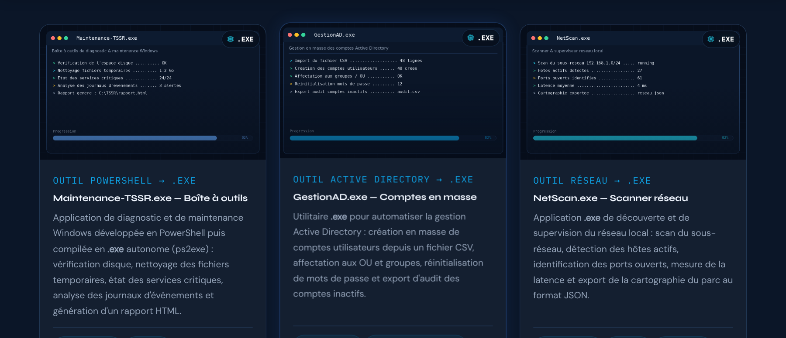
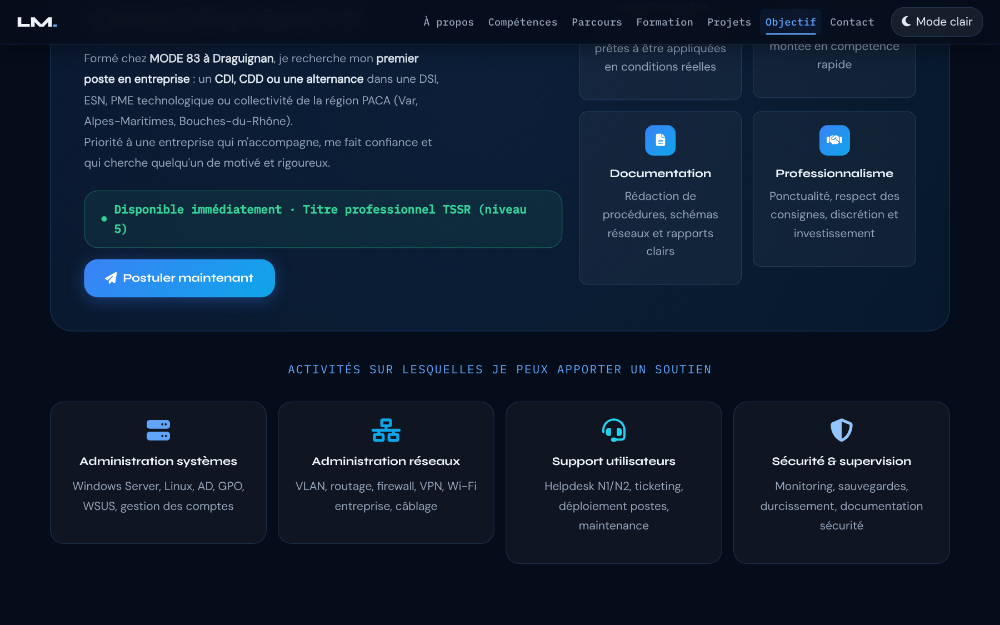
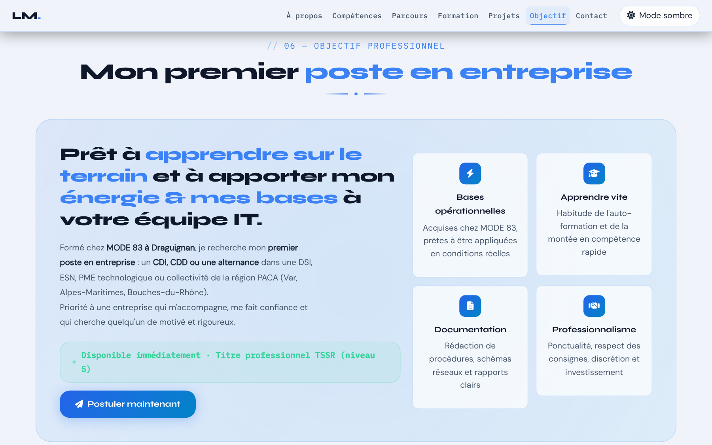
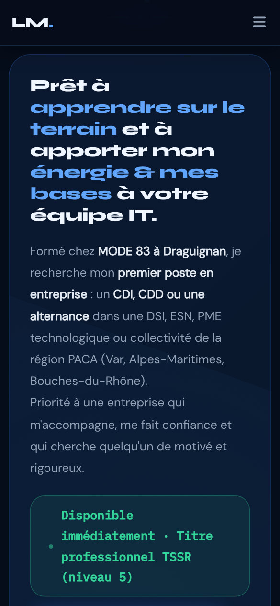

Les correctifs
- Rôle
- Comprendre pourquoi une règle plus spécifique, ou écrite plus tard, l'emporte.
- Documentation
- MDN — aspect-ratio · MDN — inherit · MDN — spécificité
- Lignes concernées
- 657, 660, 713, 714.
Série « Portfolio TSSR » · 20 épisodes
Objectif de l'épisode
Un recruteur qui arrive jusqu'ici se pose une seule question :
« Qu'est-ce que ce candidat veut vraiment et qu'est-ce qu'il m'apporte ? »
Vous allez y répondre avec la section Objectif professionnel :
une grande phrase d'accroche, le poste recherché, un badge « Disponible immédiatement »
qui pulse, quatre valeurs clés et quatre activités, dans un encadré traversé par un halo qui tourne. Et vous allez appliquer deux correctifs à la section Projets.
Partie 2
À la fin de cet épisode, vous serez capable de corriger un défaut CSS sans toucher
aux règles d'origine, de garder les proportions d'une zone d'image
et de construire un encadré animé dont le contenu reste au premier plan.
.project-img .exe-badge i).aspect-ratio.::before, @keyframes et z-index.> *..btn-hero-primary, pulse-dot).aria-label contient bien le texte visible du bouton.Les mots des épisodes précédents sont dans les listes des épisodes 1 à 9.
aspect-ratioinherit>.a > p ne touche pas un p plus profond.*aria-label le remplace.Partie 3
Cochez chaque case quand l'étape est faite.
Les cases cochées sont mémorisées sur votre ordinateur.
Tout le nouveau code est écrit dans index.html.
Les captures images/exe-1.png à exe-6.png sont celles de l'épisode 9.
Partie 4 · par rapport à l'épisode 9
L'épisode 10 ajoute trois blocs (dont deux lignes de correctifs) et complète une règle responsive. Le JavaScript ne change pas. Les numéros de ligne ci-dessous sont ceux de votre fichier de l'épisode 9 (1695 lignes).
[data-theme="light"] .project-img .exe-badge..dl-chip.dl-safe i (ligne 752) et la ligne vide qui suit.#stage { à .mission-desc, 58 lignes, suivies d'une ligne vide) : juste avant #toast { (ligne 754).@media.@media (max-width: 767.98px) reçoit .stage-highlight { padding: 1.8rem; }, à la fin de ses accolades.</section> de Projets.</section> de Projets (ligne 1557), juste avant </main> (ligne 1558).</main>, Bootstrap JS et tout le script.Résultat : le fichier passe de 1695 à 1860 lignes. Les numéros cités dans le reste de cette page sont ceux du nouveau fichier.
[data-theme="light"] .project-img .exe-badge { color: #e2e8f0; }
.project-img .exe-badge i { font-size: inherit; }
.project-img { height: auto; aspect-ratio: 900 / 540; }
.project-dl { … }Pourquoi ces deux lignes ?
.project-img i vise toutes les icônes de l'en-tête. La nouvelle règle, plus spécifique, lui rend la taille du texte.object-fit: cover en coupait le haut et le bas (barre de titre avec les trois points de couleur et le nom de l'application, barre de progression). L'en-tête prend maintenant les proportions des captures, qui s'affichent en entier.CORRECTIF (épisode 10). Elles seront conservées dans tous les épisodes suivants. Elles diffèrent donc de la page finale d'origine, qui a les mêmes défauts. @media (max-width: 767.98px) { section { padding: 4rem 0; } .about-info-grid { grid-template-columns: 1fr; } .hero-stats { gap: 1.2rem; } }
@media (max-width: 767.98px) { section { padding: 4rem 0; } .about-info-grid { grid-template-columns: 1fr; } .hero-stats { gap: 1.2rem; } .stage-highlight { padding: 1.8rem; } }Les lignes précédées de + sont à ajouter ; les autres existent déjà.
Zone 1 — la fin du premier <style>
.dl-chip.dl-safe i { color: var(--clr-success); }
#stage { background: var(--clr-bg); }
… (encadré, halo, accroche, valeurs, badge, activités)
.mission-desc { … }
#toast { … }Zone 2 — dans le <main>
</section> (fin de Projets)
<section id="stage" aria-labelledby="stage-title">
… (la section Objectif)
</section>
</main>« Les 4 lignes responsive » copie les quatre règles @media dans leur nouvelle version : sélectionnez vos lignes 765 à 768 et collez par-dessus.
Partie 5
Les règles pour reconnaître une source officielle restent celles de l'épisode 1. Les liens marqués s'ouvrent dans un nouvel onglet.
fa-2x double la taille d'une icône.Partie 6
On commence par les correctifs de la section Projets :
on observe le défaut, on ajoute la ligne, on observe la différence.
Puis on construit la section Objectif.
Vous voyez : dans chaque badge « .EXE », la puce cyan passe de 56 pixels à la taille du texte. Le badge devient une petite pilule nette.
Vous voyez : les en-têtes des cartes deviennent plus hauts, et chaque capture apparaît en entier : la barre de titre avec ses trois points de couleur et le nom de l'application, les lignes de diagnostic et la barre de progression.
Vous voyez : l'en-tête centré, le bouton « Postuler maintenant » (déjà stylé, c'est le bouton du Hero) et le titre des activités sont prêts. Le reste est brut. Le lien « Objectif » du menu mène à la section et s'allume.
Vous voyez : un grand encadré teinté aux coins très arrondis. En regardant attentivement, une lueur bleue très douce tourne lentement à l'intérieur (un tour en 20 secondes).
Vous voyez : une grande phrase en Syne avec des mots en bleu, puis le texte de motivation en gris, avec ses mots importants plus clairs.
Vous voyez : quatre cartes en 2 × 2, chacune avec une pastille dégradée, un titre et une phrase. Elles apparaissent l'une après l'autre.
Vous voyez : un badge vert, avec un point qui pulse comme le badge du Hero.
Vous voyez : quatre cartes centrées sous l'encadré, avec une grande icône colorée. Au survol, elles montent et s'entourent d'une lueur.
Pour l'observer : vue mobile (Ctrl+Maj+M). L'encadré garde des marges intérieures raisonnables, et le texte a assez de place.
Vous avez terminé quand votre fichier fait 1860 lignes, identiques au code de référence (bouton « Surligner les ajouts » de la partie 8), sans erreur rouge dans la Console.
Partie 7 · la plus importante
Chaque fiche répond aux quatre questions Quoi ?, Pourquoi ?, Comment ? et Où ?.
Les numéros sont ceux du nouveau fichier de 1860 lignes.
Deux façons de « gagner » en CSS
.project-img i { font-size: 3.5rem; … } /* ligne 660 : 1 classe + 1 balise */
.project-img .exe-badge i { font-size: inherit; } /* ligne 713 : 2 classes + 1 balise */
.project-img { height: 160px; … } /* ligne 657 */
.project-img { height: auto; aspect-ratio: 900 / 540; } /* ligne 714 : même poids, écrite après */Ces lignes existent déjà ; seul leur numéro a changé.
Le lien ouvre la fiche de l'épisode où elles ont été expliquées (les dossiers des épisodes doivent être côte à côte).
| Ligne (épisode 10) | Code | Fiche |
|---|---|---|
| 1 | <!DOCTYPE html> | Épisode 1, ligne 1 |
| 2 | <html lang="fr" data-theme="dark" dir="ltr"> | Épisode 1, ligne 2 |
| 3 | <head> | Épisode 1, ligne 3 |
| 4 | <meta charset="UTF-8" /> | Épisode 1, ligne 4 |
| 5 | <meta name="viewport" content="width=device-width, initia… | Épisode 1, ligne 5 |
| 6 | <meta name="description" content="Portfolio professionnel… | Épisode 1, ligne 6 |
| 7 | <meta name="keywords" content="TSSR, technicien systèmes … | Épisode 1, ligne 7 |
| 8 | <meta name="robots" content="index, follow" /> | Épisode 1, ligne 8 |
| 9 | <meta name="theme-color" content="#060d1a" /> | Épisode 1, ligne 9 |
| 10 | <meta name="author" content="Lucas Moreau" /> | Épisode 1, ligne 10 |
| 12 | <link rel="preconnect" href="https://fonts.googleapis.com… | Épisode 1, ligne 12 |
| 13 | <link rel="preconnect" href="https://fonts.gstatic.com" c… | Épisode 1, ligne 13 |
| 14 | <link href="https://fonts.googleapis.com/css2?family=Syne… | Épisode 1, ligne 14 |
| 16 | <link rel="stylesheet" href="https://cdn.jsdelivr.net/npm… | Épisode 1, ligne 16 |
| 17 | <link rel="stylesheet" href="https://cdnjs.cloudflare.com… | Épisode 1, ligne 17 |
| 18 | <link rel="stylesheet" href="https://cdnjs.cloudflare.com… | Épisode 1, ligne 18 |
| 20 | <script src="config.js"></script> | Épisode 1, ligne 20 |
| 21 | <script src="https://cdnjs.cloudflare.com/ajax/libs/pdf.j… | Épisode 1, ligne 21 |
| 23 | <link rel="icon" type="image/png" sizes="32x32" href="ima… | Épisode 1, ligne 23 |
| 24 | <link rel="icon" type="image/png" sizes="192x192" href="i… | Épisode 1, ligne 24 |
| 25 | <link rel="icon" type="image/webp" href="images/favicon-4… | Épisode 1, ligne 25 |
| 26 | <link rel="apple-touch-icon" sizes="180x180" href="images… | Épisode 1, ligne 26 |
| 28 | <title>Portfolio TSSR | Recherche d'emploi – Technicien S… | Épisode 1, ligne 28 |
| 29 | <style> | Épisode 2, ligne 29 |
| 30 | :root { | Épisode 2, ligne 30 |
| 31 | --clr-bg: #060d1a; | Épisode 2, ligne 31 |
| 32 | --clr-bg2: #0b1628; | Épisode 2, ligne 32 |
| 33 | --clr-surface: rgba(255,255,255,.04); | Épisode 2, ligne 33 |
| 34 | --clr-surface2: rgba(255,255,255,.07); | Épisode 2, ligne 34 |
| 35 | --clr-border: rgba(96,165,250,.18); | Épisode 2, ligne 35 |
| 36 | --clr-accent: #3b82f6; | Épisode 2, ligne 36 |
| 37 | --clr-accent2: #60a5fa; | Épisode 2, ligne 37 |
| 38 | --clr-accent3: #93c5fd; | Épisode 2, ligne 38 |
| 39 | --clr-teal: #0ea5e9; | Épisode 2, ligne 39 |
| 40 | --clr-cyan: #22d3ee; | Épisode 2, ligne 40 |
| 41 | --clr-text: #e2e8f0; | Épisode 2, ligne 41 |
| 42 | --clr-text-soft: #94a3b8; | Épisode 2, ligne 42 |
| 43 | --clr-text-faint: #475569; | Épisode 2, ligne 43 |
| 44 | --clr-heading: #f0f6ff; | Épisode 2, ligne 44 |
| 45 | --clr-white: #ffffff; | Épisode 2, ligne 45 |
| 46 | --clr-danger: #f87171; | Épisode 2, ligne 46 |
| 47 | --clr-success: #34d399; | Épisode 2, ligne 47 |
| 48 | --clr-warn: #fbbf24; | Épisode 2, ligne 48 |
| 49 | --radius-sm: 6px; | Épisode 2, ligne 49 |
| 50 | --radius-md: 12px; | Épisode 2, ligne 50 |
| 51 | --radius-lg: 20px; | Épisode 2, ligne 51 |
| 52 | --radius-xl: 32px; | Épisode 2, ligne 52 |
| 53 | --shadow-glow: 0 0 40px rgba(59,130,246,.25); | Épisode 2, ligne 53 |
| 54 | --shadow-card: 0 8px 32px rgba(0,0,0,.45); | Épisode 2, ligne 54 |
| 55 | --trans: .3s cubic-bezier(.4,0,.2,1); | Épisode 2, ligne 55 |
| 56 | --font-display: 'Syne', sans-serif; | Épisode 2, ligne 56 |
| 57 | --font-mono: 'IBM Plex Mono', monospace; | Épisode 2, ligne 57 |
| 58 | --font-body: 'DM Sans', sans-serif; | Épisode 2, ligne 58 |
| 59 | --fz-min: 1.05rem; | Épisode 2, ligne 59 |
| 60 | } | Épisode 2, ligne 60 |
| 62 | [data-theme="light"] { | Épisode 2, ligne 62 |
| 63 | --clr-bg: #f0f4fa; | Épisode 2, ligne 63 |
| 64 | --clr-bg2: #e2e8f0; | Épisode 2, ligne 64 |
| 65 | --clr-surface: rgba(255,255,255,.7); | Épisode 2, ligne 65 |
| 66 | --clr-surface2: rgba(255,255,255,.9); | Épisode 2, ligne 66 |
| 67 | --clr-border: rgba(59,130,246,.2); | Épisode 2, ligne 67 |
| 68 | --clr-accent: #2563eb; | Épisode 2, ligne 68 |
| 69 | --clr-accent2: #3b82f6; | Épisode 2, ligne 69 |
| 70 | --clr-accent3: #60a5fa; | Épisode 2, ligne 70 |
| 71 | --clr-teal: #0284c7; | Épisode 2, ligne 71 |
| 72 | --clr-cyan: #0891b2; | Épisode 2, ligne 72 |
| 73 | --clr-text: #1e293b; | Épisode 2, ligne 73 |
| 74 | --clr-text-soft: #475569; | Épisode 2, ligne 74 |
| 75 | --clr-text-faint: #94a3b8; | Épisode 2, ligne 75 |
| 76 | --clr-heading: #0f172a; | Épisode 2, ligne 76 |
| 77 | --clr-white: #ffffff; | Épisode 2, ligne 77 |
| 78 | --shadow-glow: 0 0 40px rgba(37,99,235,.15); | Épisode 2, ligne 78 |
| 79 | --shadow-card: 0 8px 32px rgba(0,0,0,.12); | Épisode 2, ligne 79 |
| 80 | } | Épisode 2, ligne 80 |
| 82 | *, *::before, *::after { box-sizing: border-box; margin: … | Épisode 2, ligne 82 |
| 84 | html { scroll-behavior: smooth; font-size: 16px; } | Épisode 2, ligne 84 |
| 86 | body { | Épisode 2, ligne 86 |
| 87 | font-family: var(--font-body); | Épisode 2, ligne 87 |
| 88 | background-color: var(--clr-bg); | Épisode 2, ligne 88 |
| 89 | color: var(--clr-text); | Épisode 2, ligne 89 |
| 90 | font-size: var(--fz-min); | Épisode 2, ligne 90 |
| 91 | line-height: 1.7; | Épisode 2, ligne 91 |
| 92 | overflow-x: hidden; | Épisode 2, ligne 92 |
| 93 | transition: background-color var(--trans), color var(--tr… | Épisode 2, ligne 93 |
| 94 | } | Épisode 2, ligne 94 |
| 96 | ::-webkit-scrollbar { width: 7px; } | Épisode 2, ligne 96 |
| 97 | ::-webkit-scrollbar-track { background: var(--clr… | Épisode 2, ligne 97 |
| 98 | ::-webkit-scrollbar-thumb { | Épisode 2, ligne 98 |
| 99 | background: linear-gradient(180deg, var(--clr-accent), va… | Épisode 2, ligne 99 |
| 100 | border-radius: 10px; height: 120px; | Épisode 2, ligne 100 |
| 101 | } | Épisode 2, ligne 101 |
| 102 | ::-webkit-scrollbar-thumb:hover { | Épisode 2, ligne 102 |
| 103 | background: linear-gradient(180deg, var(--clr-accent2), v… | Épisode 2, ligne 103 |
| 104 | box-shadow: 0 0 8px var(--clr-accent); | Épisode 2, ligne 104 |
| 105 | } | Épisode 2, ligne 105 |
| 107 | .skip-link { | Épisode 2, ligne 107 |
| 108 | position: absolute; | Épisode 2, ligne 108 |
| 109 | top: -60px; left: 1rem; | Épisode 2, ligne 109 |
| 110 | background: var(--clr-accent); | Épisode 2, ligne 110 |
| 111 | color: var(--clr-white); | Épisode 2, ligne 111 |
| 112 | padding: .6rem 1.2rem; | Épisode 2, ligne 112 |
| 113 | border-radius: var(--radius-md); | Épisode 2, ligne 113 |
| 114 | font-weight: 600; | Épisode 2, ligne 114 |
| 115 | font-size: var(--fz-min); | Épisode 2, ligne 115 |
| 116 | z-index: 9999; | Épisode 2, ligne 116 |
| 117 | transition: top .2s; | Épisode 2, ligne 117 |
| 118 | text-decoration: none; | Épisode 2, ligne 118 |
| 119 | } | Épisode 2, ligne 119 |
| 120 | .skip-link:focus { top: 1rem; } | Épisode 2, ligne 120 |
| 122 | #read-progress { | Épisode 2, ligne 122 |
| 123 | position: fixed; top: 0; left: 0; | Épisode 2, ligne 123 |
| 124 | height: 3px; width: 0%; | Épisode 2, ligne 124 |
| 125 | background: linear-gradient(90deg, var(--clr-accent), var… | Épisode 2, ligne 125 |
| 126 | z-index: 9998; | Épisode 2, ligne 126 |
| 127 | transition: width .1s linear; | Épisode 2, ligne 127 |
| 128 | box-shadow: 0 0 10px var(--clr-accent); | Épisode 2, ligne 128 |
| 129 | } | Épisode 2, ligne 129 |
| 131 | #mainNav { | Épisode 3, ligne 131 |
| 132 | position: fixed; top: 0; left: 0; right: 0; | Épisode 3, ligne 132 |
| 133 | z-index: 1050; | Épisode 3, ligne 133 |
| 134 | padding: .9rem 0; | Épisode 3, ligne 134 |
| 135 | background: rgba(6,13,26,.82); | Épisode 3, ligne 135 |
| 136 | backdrop-filter: blur(18px) saturate(1.4); | Épisode 3, ligne 136 |
| 137 | -webkit-backdrop-filter: blur(18px) saturate(1.4); | Épisode 3, ligne 137 |
| 138 | border-bottom: 1px solid var(--clr-border); | Épisode 3, ligne 138 |
| 139 | transition: all var(--trans); | Épisode 3, ligne 139 |
| 140 | } | Épisode 3, ligne 140 |
| 141 | #mainNav.scrolled { | Épisode 3, ligne 141 |
| 142 | padding: .55rem 0; | Épisode 3, ligne 142 |
| 143 | background: rgba(6,13,26,.95); | Épisode 3, ligne 143 |
| 144 | box-shadow: 0 4px 30px rgba(0,0,0,.4); | Épisode 3, ligne 144 |
| 145 | } | Épisode 3, ligne 145 |
| 146 | [data-theme="light"] #mainNav { background: rgba(240,244,… | Épisode 3, ligne 146 |
| 147 | [data-theme="light"] #mainNav.scrolled { background: rgba… | Épisode 3, ligne 147 |
| 149 | .nav-brand { | Épisode 3, ligne 149 |
| 150 | font-family: var(--font-display); | Épisode 3, ligne 150 |
| 151 | font-weight: 800; font-size: 1.3rem; | Épisode 3, ligne 151 |
| 152 | color: var(--clr-heading) !important; | Épisode 3, ligne 152 |
| 153 | text-decoration: none; letter-spacing: -.02em; | Épisode 3, ligne 153 |
| 154 | } | Épisode 3, ligne 154 |
| 155 | .nav-brand span { color: var(--clr-accent2); } | Épisode 3, ligne 155 |
| 157 | .navbar-nav .nav-link { | Épisode 3, ligne 157 |
| 158 | font-family: var(--font-mono); | Épisode 3, ligne 158 |
| 159 | font-size: .92rem; | Épisode 3, ligne 159 |
| 160 | font-weight: 500; | Épisode 3, ligne 160 |
| 161 | color: var(--clr-text-soft) !important; | Épisode 3, ligne 161 |
| 162 | letter-spacing: .02em; | Épisode 3, ligne 162 |
| 163 | padding: .4rem .5rem !important; | Épisode 3, ligne 163 |
| 164 | border-radius: var(--radius-sm); | Épisode 3, ligne 164 |
| 165 | transition: all var(--trans); | Épisode 3, ligne 165 |
| 166 | position: relative; | Épisode 3, ligne 166 |
| 167 | } | Épisode 3, ligne 167 |
| 168 | .navbar-nav .nav-link::before { | Épisode 3, ligne 168 |
| 169 | content: ''; | Épisode 3, ligne 169 |
| 170 | position: absolute; bottom: 0; left: 50%; right: 50%; | Épisode 3, ligne 170 |
| 171 | height: 2px; background: var(--clr-accent2); | Épisode 3, ligne 171 |
| 172 | border-radius: 2px; transition: all var(--trans); | Épisode 3, ligne 172 |
| 173 | } | Épisode 3, ligne 173 |
| 174 | .navbar-nav .nav-link:hover, | Épisode 3, ligne 174 |
| 175 | .navbar-nav .nav-link:focus { | Épisode 3, ligne 175 |
| 176 | color: var(--clr-accent2) !important; | Épisode 3, ligne 176 |
| 177 | background: rgba(59,130,246,.08); | Épisode 3, ligne 177 |
| 178 | } | Épisode 3, ligne 178 |
| 179 | .navbar-nav .nav-link:hover::before, | Épisode 3, ligne 179 |
| 180 | .navbar-nav .nav-link:focus::before { left: 10%; right: 1… | Épisode 3, ligne 180 |
| 182 | .navbar-nav .nav-link.active { | Épisode 8, ligne 182 |
| 183 | color: var(--clr-accent2) !important; | Épisode 8, ligne 183 |
| 184 | background: rgba(59,130,246,.08); | Épisode 8, ligne 184 |
| 185 | } | Épisode 8, ligne 185 |
| 186 | .navbar-nav .nav-link.active::before { left: 10%; right: … | Épisode 8, ligne 186 |
| 188 | #themeToggle { | Épisode 3, ligne 182 |
| 189 | background: var(--clr-surface2); | Épisode 3, ligne 183 |
| 190 | border: 1px solid var(--clr-border); | Épisode 3, ligne 184 |
| 191 | color: var(--clr-text); | Épisode 3, ligne 185 |
| 192 | padding: .4rem .9rem; | Épisode 3, ligne 186 |
| 193 | border-radius: var(--radius-lg); | Épisode 3, ligne 187 |
| 194 | cursor: pointer; font-size: var(--fz-min); | Épisode 3, ligne 188 |
| 195 | transition: all var(--trans); | Épisode 3, ligne 189 |
| 196 | display: flex; align-items: center; gap: .5rem; | Épisode 3, ligne 190 |
| 197 | white-space: nowrap; | Épisode 3, ligne 191 |
| 198 | } | Épisode 3, ligne 192 |
| 199 | #themeToggle:hover { background: var(--clr-accent); color… | Épisode 3, ligne 193 |
| 200 | #themeToggle:focus-visible { outline: 2px solid var(--clr… | Épisode 3, ligne 194 |
| 202 | #hero { | Épisode 4, ligne 196 |
| 203 | min-height: 100vh; | Épisode 4, ligne 197 |
| 204 | display: flex; align-items: center; | Épisode 4, ligne 198 |
| 205 | position: relative; overflow: hidden; | Épisode 4, ligne 199 |
| 206 | padding: 7rem 0 4rem; | Épisode 4, ligne 200 |
| 207 | } | Épisode 4, ligne 201 |
| 208 | #hero::before { | Épisode 4, ligne 202 |
| 209 | content: ''; position: absolute; inset: 0; | Épisode 4, ligne 203 |
| 210 | background-image: | Épisode 4, ligne 204 |
| 211 | linear-gradient(rgba(59,130,246,.07) 1px, transparent 1px), | Épisode 4, ligne 205 |
| 212 | linear-gradient(90deg, rgba(59,130,246,.07) 1px, transpar… | Épisode 4, ligne 206 |
| 213 | background-size: 40px 40px; z-index: 0; | Épisode 4, ligne 207 |
| 214 | } | Épisode 4, ligne 208 |
| 215 | #hero::after { | Épisode 4, ligne 209 |
| 216 | content: ''; position: absolute; | Épisode 4, ligne 210 |
| 217 | top: -10%; left: -10%; width: 70%; height: 70%; | Épisode 4, ligne 211 |
| 218 | background: radial-gradient(ellipse at center, rgba(59,13… | Épisode 4, ligne 212 |
| 219 | z-index: 0; animation: floatGlow 6s ease-in-out infinite … | Épisode 4, ligne 213 |
| 220 | } | Épisode 4, ligne 214 |
| 221 | @keyframes floatGlow { | Épisode 4, ligne 215 |
| 222 | from { transform: translate(0,0) scale(1); } | Épisode 4, ligne 216 |
| 223 | to { transform: translate(4%,3%) scale(1.05); } | Épisode 4, ligne 217 |
| 224 | } | Épisode 4, ligne 218 |
| 225 | .hero-content { position: relative; z-index: 1; } | Épisode 4, ligne 219 |
| 227 | .status-badge { | Épisode 4, ligne 221 |
| 228 | display: inline-flex; align-items: center; gap: .5rem; | Épisode 4, ligne 222 |
| 229 | background: rgba(52,211,153,.1); | Épisode 4, ligne 223 |
| 230 | border: 1px solid rgba(52,211,153,.3); | Épisode 4, ligne 224 |
| 231 | color: var(--clr-success); | Épisode 4, ligne 225 |
| 232 | font-family: var(--font-mono); | Épisode 4, ligne 226 |
| 233 | font-size: var(--fz-min); font-weight: 500; | Épisode 4, ligne 227 |
| 234 | letter-spacing: .04em; | Épisode 4, ligne 228 |
| 235 | padding: .4rem 1rem; border-radius: 100px; | Épisode 4, ligne 229 |
| 236 | margin-bottom: 1.4rem; | Épisode 4, ligne 230 |
| 237 | } | Épisode 4, ligne 231 |
| 238 | .status-dot { | Épisode 4, ligne 232 |
| 239 | width: 7px; height: 7px; | Épisode 4, ligne 233 |
| 240 | background: var(--clr-success); border-radius: 50%; | Épisode 4, ligne 234 |
| 241 | animation: pulse-dot 1.6s ease infinite; flex-shrink: 0; | Épisode 4, ligne 235 |
| 242 | } | Épisode 4, ligne 236 |
| 243 | @keyframes pulse-dot { | Épisode 4, ligne 237 |
| 244 | 0%,100% { opacity: 1; transform: scale(1); } | Épisode 4, ligne 238 |
| 245 | 50% { opacity: .5; transform: scale(.75); } | Épisode 4, ligne 239 |
| 246 | } | Épisode 4, ligne 240 |
| 248 | .hero-title { | Épisode 4, ligne 242 |
| 249 | font-family: var(--font-display); font-weight: 800; | Épisode 4, ligne 243 |
| 250 | font-size: clamp(2.4rem, 6vw, 4.2rem); | Épisode 4, ligne 244 |
| 251 | line-height: 1.1; color: var(--clr-heading); | Épisode 4, ligne 245 |
| 252 | letter-spacing: -.03em; margin-bottom: 1rem; | Épisode 4, ligne 246 |
| 253 | } | Épisode 4, ligne 247 |
| 254 | .hero-title .accent { color: var(--clr-accent2); } | Épisode 4, ligne 248 |
| 255 | .hero-title .typing-cursor { | Épisode 4, ligne 249 |
| 256 | display: inline-block; width: 3px; height: 1em; | Épisode 4, ligne 250 |
| 257 | background: var(--clr-accent2); margin-left: 3px; | Épisode 4, ligne 251 |
| 258 | vertical-align: text-bottom; | Épisode 4, ligne 252 |
| 259 | animation: blink .75s step-end infinite; | Épisode 4, ligne 253 |
| 260 | } | Épisode 4, ligne 254 |
| 261 | @keyframes blink { 50% { opacity: 0; } } | Épisode 4, ligne 255 |
| 263 | .hero-subtitle { | Épisode 4, ligne 257 |
| 264 | font-family: var(--font-mono); | Épisode 4, ligne 258 |
| 265 | font-size: clamp(var(--fz-min), 1.8vw, 1.15rem); | Épisode 4, ligne 259 |
| 266 | color: var(--clr-accent3); letter-spacing: .04em; margin-… | Épisode 4, ligne 260 |
| 267 | } | Épisode 4, ligne 261 |
| 268 | .hero-desc { | Épisode 4, ligne 262 |
| 269 | font-size: clamp(var(--fz-min), 2vw, 1.15rem); | Épisode 4, ligne 263 |
| 270 | color: var(--clr-text-soft); | Épisode 4, ligne 264 |
| 271 | max-width: 520px; margin-bottom: 2.2rem; line-height: 1.8; | Épisode 4, ligne 265 |
| 272 | } | Épisode 4, ligne 266 |
| 274 | .hero-avatar-wrap { | Épisode 4, ligne 268 |
| 275 | position: relative; display: flex; | Épisode 4, ligne 269 |
| 276 | justify-content: center; align-items: center; | Épisode 4, ligne 270 |
| 277 | } | Épisode 4, ligne 271 |
| 278 | .hero-avatar-ring { | Épisode 4, ligne 272 |
| 279 | position: relative; | Épisode 4, ligne 273 |
| 280 | width: clamp(220px,30vw,300px); | Épisode 4, ligne 274 |
| 281 | height: clamp(220px,30vw,300px); | Épisode 4, ligne 275 |
| 282 | } | Épisode 4, ligne 276 |
| 283 | .hero-avatar-ring::before, | Épisode 4, ligne 277 |
| 284 | .hero-avatar-ring::after { | Épisode 4, ligne 278 |
| 285 | content: ''; | Épisode 4, ligne 279 |
| 286 | position: absolute; | Épisode 4, ligne 280 |
| 287 | inset: -12px; | Épisode 4, ligne 281 |
| 288 | border-radius: 50%; | Épisode 4, ligne 282 |
| 289 | border: 2px solid transparent; | Épisode 4, ligne 283 |
| 291 | background: conic-gradient( | Épisode 4, ligne 285 |
| 292 | from 0deg, | Épisode 4, ligne 286 |
| 293 | var(--clr-accent), | Épisode 4, ligne 287 |
| 294 | var(--clr-teal), | Épisode 4, ligne 288 |
| 295 | transparent 60% | Épisode 4, ligne 289 |
| 296 | ) border-box; | Épisode 4, ligne 290 |
| 298 | -webkit-mask: | Épisode 4, ligne 292 |
| 299 | linear-gradient(#fff 0 0) padding-box, | Épisode 4, ligne 293 |
| 300 | linear-gradient(#fff 0 0); | Épisode 4, ligne 294 |
| 302 | -webkit-mask-composite: destination-out; | Épisode 4, ligne 296 |
| 304 | mask: | Épisode 4, ligne 298 |
| 305 | linear-gradient(#fff 0 0) padding-box, | Épisode 4, ligne 299 |
| 306 | linear-gradient(#fff 0 0); | Épisode 4, ligne 300 |
| 308 | mask-composite: exclude; | Épisode 4, ligne 302 |
| 310 | animation: spinRing 8s linear infinite; | Épisode 4, ligne 304 |
| 311 | } | Épisode 4, ligne 305 |
| 312 | .hero-avatar-ring::after { | Épisode 4, ligne 306 |
| 313 | inset: -22px; border-width: 1px; opacity: .4; | Épisode 4, ligne 307 |
| 314 | animation-duration: 14s; animation-direction: reverse; | Épisode 4, ligne 308 |
| 315 | } | Épisode 4, ligne 309 |
| 316 | @keyframes spinRing { to { transform: rotate(360deg); } } | Épisode 4, ligne 310 |
| 318 | .hero-avatar { | Épisode 4, ligne 312 |
| 319 | width: 100%; height: 100%; border-radius: 50%; | Épisode 4, ligne 313 |
| 320 | background: linear-gradient(145deg, #1a3a5c 0%, #0b1e38 4… | Épisode 4, ligne 314 |
| 321 | border: 3px solid var(--clr-border); | Épisode 4, ligne 315 |
| 322 | display: flex; flex-direction: column; | Épisode 4, ligne 316 |
| 323 | align-items: center; justify-content: center; gap: .4rem; | Épisode 4, ligne 317 |
| 324 | overflow: hidden; position: relative; | Épisode 4, ligne 318 |
| 325 | } | Épisode 4, ligne 319 |
| 326 | .hero-avatar i { font-size: clamp(4rem,10vw,5.5rem); colo… | Épisode 4, ligne 320 |
| 327 | .hero-avatar .avatar-label { | Épisode 4, ligne 321 |
| 328 | font-family: var(--font-mono); font-size: var(--fz-min); | Épisode 4, ligne 322 |
| 329 | color: var(--clr-accent2); letter-spacing: .1em; opacity:… | Épisode 4, ligne 323 |
| 330 | } | Épisode 4, ligne 324 |
| 332 | .floating-chip { | Épisode 4, ligne 326 |
| 333 | position: absolute; | Épisode 4, ligne 327 |
| 334 | background: var(--clr-surface); backdrop-filter: blur(10px); | Épisode 4, ligne 328 |
| 335 | border: 1px solid var(--clr-border); border-radius: var(-… | Épisode 4, ligne 329 |
| 336 | padding: .5rem 1rem; font-family: var(--font-mono); | Épisode 4, ligne 330 |
| 337 | font-size: var(--fz-min); color: var(--clr-accent3); whit… | Épisode 4, ligne 331 |
| 338 | animation: chipFloat 4s ease-in-out infinite alternate; | Épisode 4, ligne 332 |
| 339 | } | Épisode 4, ligne 333 |
| 340 | .floating-chip:nth-child(2) { top: 5%; left: -8%; anima… | Épisode 4, ligne 334 |
| 341 | .floating-chip:nth-child(3) { bottom: 8%; right: -8%; ani… | Épisode 4, ligne 335 |
| 342 | .floating-chip:nth-child(4) { top: 40%; right: -12%; ani… | Épisode 4, ligne 336 |
| 343 | @keyframes chipFloat { | Épisode 4, ligne 337 |
| 344 | from { transform: translateY(0); } | Épisode 4, ligne 338 |
| 345 | to { transform: translateY(-8px); } | Épisode 4, ligne 339 |
| 346 | } | Épisode 4, ligne 340 |
| 348 | .btn-hero-primary { | Épisode 4, ligne 342 |
| 349 | display: inline-flex; align-items: center; gap: .55rem; | Épisode 4, ligne 343 |
| 350 | background: linear-gradient(135deg, var(--clr-accent), va… | Épisode 4, ligne 344 |
| 351 | color: #fff; font-family: var(--font-display); font-weigh… | Épisode 4, ligne 345 |
| 352 | font-size: var(--fz-min); padding: .85rem 1.9rem; | Épisode 4, ligne 346 |
| 353 | border-radius: var(--radius-lg); text-decoration: none; b… | Épisode 4, ligne 347 |
| 354 | cursor: pointer; transition: all var(--trans); | Épisode 4, ligne 348 |
| 355 | box-shadow: 0 4px 24px rgba(59,130,246,.35); | Épisode 4, ligne 349 |
| 356 | } | Épisode 4, ligne 350 |
| 357 | .btn-hero-primary:hover { transform: translateY(-3px); bo… | Épisode 4, ligne 351 |
| 358 | .btn-hero-primary:focus-visible { outline: 3px solid var(… | Épisode 4, ligne 352 |
| 360 | .btn-hero-secondary { | Épisode 4, ligne 354 |
| 361 | display: inline-flex; align-items: center; gap: .55rem; | Épisode 4, ligne 355 |
| 362 | background: transparent; color: var(--clr-text); | Épisode 4, ligne 356 |
| 363 | font-family: var(--font-display); font-weight: 600; | Épisode 4, ligne 357 |
| 364 | font-size: var(--fz-min); padding: .85rem 1.9rem; | Épisode 4, ligne 358 |
| 365 | border-radius: var(--radius-lg); text-decoration: none; | Épisode 4, ligne 359 |
| 366 | border: 1px solid var(--clr-border); cursor: pointer; | Épisode 4, ligne 360 |
| 367 | transition: all var(--trans); | Épisode 4, ligne 361 |
| 368 | } | Épisode 4, ligne 362 |
| 369 | .btn-hero-secondary:hover { | Épisode 4, ligne 363 |
| 370 | background: var(--clr-surface2); border-color: var(--clr-… | Épisode 4, ligne 364 |
| 371 | color: var(--clr-accent2); transform: translateY(-3px); | Épisode 4, ligne 365 |
| 372 | } | Épisode 4, ligne 366 |
| 373 | .btn-hero-secondary:focus-visible { outline: 3px solid va… | Épisode 4, ligne 367 |
| 375 | .hero-stats { display: flex; gap: 2rem; margin-top: 2.8re… | Épisode 4, ligne 369 |
| 376 | .hero-stat { text-align: left; } | Épisode 4, ligne 370 |
| 377 | .hero-stat .stat-val { | Épisode 4, ligne 371 |
| 378 | font-family: var(--font-display); font-weight: 800; font-… | Épisode 4, ligne 372 |
| 379 | color: var(--clr-heading); line-height: 1; | Épisode 4, ligne 373 |
| 380 | } | Épisode 4, ligne 374 |
| 381 | .hero-stat .stat-val span { color: var(--clr-accent2); } | Épisode 4, ligne 375 |
| 382 | .hero-stat .stat-lbl { | Épisode 4, ligne 376 |
| 383 | font-family: var(--font-mono); font-size: var(--fz-min); | Épisode 4, ligne 377 |
| 384 | color: var(--clr-text-faint); letter-spacing: .04em; | Épisode 4, ligne 378 |
| 385 | margin-top: .3rem; line-height: 1.4; | Épisode 4, ligne 379 |
| 386 | } | Épisode 4, ligne 380 |
| 387 | .hero-stat-sep { width: 1px; background: var(--clr-border… | Épisode 4, ligne 381 |
| 389 | .scroll-indicator { | Épisode 4, ligne 383 |
| 390 | position: absolute; bottom: 2.5rem; left: 50%; | Épisode 4, ligne 384 |
| 391 | transform: translateX(-50%); | Épisode 4, ligne 385 |
| 392 | display: flex; flex-direction: column; align-items: cente… | Épisode 4, ligne 386 |
| 393 | cursor: pointer; animation: bounceDown 2s ease infinite; … | Épisode 4, ligne 387 |
| 394 | text-decoration: none; | Épisode 4, ligne 388 |
| 395 | } | Épisode 4, ligne 389 |
| 396 | .scroll-indicator span { | Épisode 4, ligne 390 |
| 397 | font-family: var(--font-mono); font-size: var(--fz-min); | Épisode 4, ligne 391 |
| 398 | letter-spacing: .08em; color: var(--clr-text-faint); | Épisode 4, ligne 392 |
| 399 | } | Épisode 4, ligne 393 |
| 400 | .scroll-indicator i { color: var(--clr-accent2); font-siz… | Épisode 4, ligne 394 |
| 401 | @keyframes bounceDown { | Épisode 4, ligne 395 |
| 402 | 0%,20%,50%,80%,100% { transform: translateX(-50%) transla… | Épisode 4, ligne 396 |
| 403 | 40% { transform: translateX(-50%) translateY(6px); } | Épisode 4, ligne 397 |
| 404 | 60% { transform: translateX(-50%) translateY(3px); } | Épisode 4, ligne 398 |
| 405 | } | Épisode 4, ligne 399 |
| 407 | section { padding: 5.5rem 0; } | Épisode 5, ligne 401 |
| 409 | .section-label { | Épisode 5, ligne 403 |
| 410 | font-family: var(--font-mono); font-size: var(--fz-min); | Épisode 5, ligne 404 |
| 411 | letter-spacing: .12em; color: var(--clr-accent2); | Épisode 5, ligne 405 |
| 412 | text-transform: uppercase; display: flex; align-items: ce… | Épisode 5, ligne 406 |
| 413 | margin-bottom: .8rem; | Épisode 5, ligne 407 |
| 414 | } | Épisode 5, ligne 408 |
| 415 | .section-label::before { content: '//'; opacity: .5; } | Épisode 5, ligne 409 |
| 417 | .section-title { | Épisode 5, ligne 411 |
| 418 | font-family: var(--font-display); font-weight: 800; | Épisode 5, ligne 412 |
| 419 | font-size: clamp(1.8rem, 4vw, 2.8rem); | Épisode 5, ligne 413 |
| 420 | color: var(--clr-heading); letter-spacing: -.02em; | Épisode 5, ligne 414 |
| 421 | line-height: 1.15; margin-bottom: 1rem; | Épisode 5, ligne 415 |
| 422 | } | Épisode 5, ligne 416 |
| 423 | .section-title .accent { color: var(--clr-accent2); } | Épisode 5, ligne 417 |
| 425 | .section-desc { | Épisode 5, ligne 419 |
| 426 | color: var(--clr-text-soft); font-size: var(--fz-min); | Épisode 5, ligne 420 |
| 427 | max-width: 600px; line-height: 1.75; | Épisode 5, ligne 421 |
| 428 | } | Épisode 5, ligne 422 |
| 430 | .section-divider { | Épisode 5, ligne 424 |
| 431 | display: flex; align-items: center; gap: .8rem; margin: .… | Épisode 5, ligne 425 |
| 432 | } | Épisode 5, ligne 426 |
| 433 | .section-divider .line { | Épisode 5, ligne 427 |
| 434 | height: 2px; width: 48px; | Épisode 5, ligne 428 |
| 435 | background: linear-gradient(90deg, var(--clr-accent), tra… | Épisode 5, ligne 429 |
| 436 | border-radius: 2px; | Épisode 5, ligne 430 |
| 437 | } | Épisode 5, ligne 431 |
| 438 | .section-divider .dot { | Épisode 5, ligne 432 |
| 439 | width: 6px; height: 6px; border-radius: 50%; background: … | Épisode 5, ligne 433 |
| 440 | } | Épisode 5, ligne 434 |
| 442 | .reveal { | Épisode 5, ligne 436 |
| 443 | opacity: 0; transform: translateY(30px); | Épisode 5, ligne 437 |
| 444 | transition: opacity .65s cubic-bezier(.4,0,.2,1), transfo… | Épisode 5, ligne 438 |
| 445 | } | Épisode 5, ligne 439 |
| 446 | .reveal.visible { opacity: 1; transform: translateY(0); } | Épisode 5, ligne 440 |
| 447 | .reveal-left { transform: translateX(-30px); } | Épisode 5, ligne 441 |
| 448 | .reveal-right { transform: translateX(30px); } | Épisode 5, ligne 442 |
| 449 | .reveal-left.visible, .reveal-right.visible { transform: … | Épisode 5, ligne 443 |
| 451 | .glass-card { | Épisode 5, ligne 445 |
| 452 | background: var(--clr-surface); backdrop-filter: blur(14px); | Épisode 5, ligne 446 |
| 453 | -webkit-backdrop-filter: blur(14px); | Épisode 5, ligne 447 |
| 454 | border: 1px solid var(--clr-border); border-radius: var(-… | Épisode 5, ligne 448 |
| 455 | padding: 2rem; transition: all var(--trans); box-shadow: … | Épisode 5, ligne 449 |
| 456 | } | Épisode 5, ligne 450 |
| 457 | .glass-card:hover { | Épisode 5, ligne 451 |
| 458 | border-color: rgba(59,130,246,.4); | Épisode 5, ligne 452 |
| 459 | box-shadow: var(--shadow-glow), var(--shadow-card); trans… | Épisode 5, ligne 453 |
| 460 | } | Épisode 5, ligne 454 |
| 462 | #about { background: var(--clr-bg2); } | Épisode 5, ligne 456 |
| 464 | .about-text p { | Épisode 5, ligne 458 |
| 465 | color: var(--clr-text); font-size: var(--fz-min); | Épisode 5, ligne 459 |
| 466 | line-height: 1.85; margin-bottom: 1.1rem; | Épisode 5, ligne 460 |
| 467 | } | Épisode 5, ligne 461 |
| 468 | .about-text strong { color: var(--clr-accent2); font-weig… | Épisode 5, ligne 462 |
| 470 | .about-info-grid { | Épisode 5, ligne 464 |
| 471 | display: grid; grid-template-columns: 1fr 1fr; gap: .85re… | Épisode 5, ligne 465 |
| 472 | } | Épisode 5, ligne 466 |
| 473 | .about-info-item { | Épisode 5, ligne 467 |
| 474 | display: flex; align-items: center; gap: .65rem; | Épisode 5, ligne 468 |
| 475 | font-size: var(--fz-min); color: var(--clr-text-soft); | Épisode 5, ligne 469 |
| 476 | } | Épisode 5, ligne 470 |
| 477 | .about-info-item i { width: 20px; color: var(--clr-accent… | Épisode 5, ligne 471 |
| 479 | .motive-list { list-style: none; padding: 0; display: fle… | Épisode 5, ligne 473 |
| 480 | .motive-list li { | Épisode 5, ligne 474 |
| 481 | display: flex; align-items: flex-start; gap: .85rem; | Épisode 5, ligne 475 |
| 482 | font-size: var(--fz-min); color: var(--clr-text-soft); | Épisode 5, ligne 476 |
| 483 | padding: .8rem 1rem; background: var(--clr-surface); | Épisode 5, ligne 477 |
| 484 | border: 1px solid var(--clr-border); border-radius: var(-… | Épisode 5, ligne 478 |
| 485 | transition: all var(--trans); | Épisode 5, ligne 479 |
| 486 | } | Épisode 5, ligne 480 |
| 487 | .motive-list li:hover { border-color: var(--clr-accent2);… | Épisode 5, ligne 481 |
| 488 | .motive-list li .ico { | Épisode 5, ligne 482 |
| 489 | width: 34px; height: 34px; | Épisode 5, ligne 483 |
| 490 | background: linear-gradient(135deg, var(--clr-accent), va… | Épisode 5, ligne 484 |
| 491 | border-radius: var(--radius-sm); display: flex; align-ite… | Épisode 5, ligne 485 |
| 492 | justify-content: center; flex-shrink: 0; font-size: var(-… | Épisode 5, ligne 486 |
| 493 | } | Épisode 5, ligne 487 |
| 494 | .motive-list li strong { | Épisode 5, ligne 488 |
| 495 | color: var(--clr-heading); display: block; | Épisode 5, ligne 489 |
| 496 | margin-bottom: .2rem; font-size: var(--fz-min); | Épisode 5, ligne 490 |
| 497 | } | Épisode 5, ligne 491 |
| 499 | #skills { background: var(--clr-bg); } | Épisode 6, ligne 493 |
| 501 | .skill-cat-title { | Épisode 5, ligne 493 |
| 502 | font-family: var(--font-mono); font-size: var(--fz-min); | Épisode 5, ligne 494 |
| 503 | letter-spacing: .1em; color: var(--clr-accent2); | Épisode 5, ligne 495 |
| 504 | text-transform: uppercase; margin-bottom: 1.2rem; | Épisode 5, ligne 496 |
| 505 | } | Épisode 5, ligne 497 |
| 507 | .skill-card { | Épisode 6, ligne 501 |
| 508 | background: var(--clr-surface); border: 1px solid var(--c… | Épisode 6, ligne 502 |
| 509 | border-radius: var(--radius-md); padding: 1.2rem 1.4rem; | Épisode 6, ligne 503 |
| 510 | transition: all var(--trans); cursor: default; | Épisode 6, ligne 504 |
| 511 | } | Épisode 6, ligne 505 |
| 512 | .skill-card:hover { | Épisode 6, ligne 506 |
| 513 | border-color: rgba(59,130,246,.45); background: var(--clr… | Épisode 6, ligne 507 |
| 514 | transform: translateY(-3px); box-shadow: 0 6px 24px rgba(… | Épisode 6, ligne 508 |
| 515 | } | Épisode 6, ligne 509 |
| 516 | .skill-header { display: flex; justify-content: space-bet… | Épisode 6, ligne 510 |
| 517 | .skill-name { | Épisode 6, ligne 511 |
| 518 | display: flex; align-items: center; gap: .6rem; | Épisode 6, ligne 512 |
| 519 | font-family: var(--font-display); font-weight: 600; | Épisode 6, ligne 513 |
| 520 | font-size: var(--fz-min); color: var(--clr-text); | Épisode 6, ligne 514 |
| 521 | } | Épisode 6, ligne 515 |
| 522 | .skill-name i { color: var(--clr-accent2); font-size: var… | Épisode 6, ligne 516 |
| 523 | .skill-pct { font-family: var(--font-mono); font-size: va… | Épisode 6, ligne 517 |
| 525 | .skill-bar-bg { height: 5px; background: rgba(255,255,255… | Épisode 6, ligne 519 |
| 526 | .skill-bar { | Épisode 6, ligne 520 |
| 527 | height: 100%; border-radius: 10px; | Épisode 6, ligne 521 |
| 528 | background: linear-gradient(90deg, var(--clr-accent), var… | Épisode 6, ligne 522 |
| 529 | width: 0%; transition: width 1.2s cubic-bezier(.4,0,.2,1)… | Épisode 6, ligne 523 |
| 530 | } | Épisode 6, ligne 524 |
| 531 | .skill-bar::after { | Épisode 6, ligne 525 |
| 532 | content: ''; position: absolute; right: 0; top: 50%; tran… | Épisode 6, ligne 526 |
| 533 | width: 8px; height: 8px; background: var(--clr-cyan); | Épisode 6, ligne 527 |
| 534 | border-radius: 50%; box-shadow: 0 0 6px var(--clr-cyan); | Épisode 6, ligne 528 |
| 535 | } | Épisode 6, ligne 529 |
| 537 | .tech-badge { | Épisode 6, ligne 531 |
| 538 | display: inline-flex; align-items: center; gap: .4rem; | Épisode 6, ligne 532 |
| 539 | background: var(--clr-surface); border: 1px solid var(--c… | Épisode 6, ligne 533 |
| 540 | padding: .4rem .85rem; border-radius: 100px; | Épisode 6, ligne 534 |
| 541 | font-family: var(--font-mono); font-size: var(--fz-min); | Épisode 6, ligne 535 |
| 542 | color: var(--clr-text-soft); transition: all var(--trans); | Épisode 6, ligne 536 |
| 543 | } | Épisode 6, ligne 537 |
| 544 | .tech-badge:hover { border-color: var(--clr-accent2); col… | Épisode 6, ligne 538 |
| 546 | #parcours { background: var(--clr-bg2); } | Épisode 7, ligne 540 |
| 548 | .timeline { position: relative; padding-left: 2.5rem; } | Épisode 7, ligne 542 |
| 549 | .timeline::before { | Épisode 7, ligne 543 |
| 550 | content: ''; position: absolute; left: .6rem; top: 0; bot… | Épisode 7, ligne 544 |
| 551 | width: 2px; | Épisode 7, ligne 545 |
| 552 | background: linear-gradient(180deg, var(--clr-accent), va… | Épisode 7, ligne 546 |
| 553 | border-radius: 2px; | Épisode 7, ligne 547 |
| 554 | } | Épisode 7, ligne 548 |
| 555 | .timeline-item { position: relative; padding-bottom: 2.5r… | Épisode 7, ligne 549 |
| 556 | .timeline-item:last-child { padding-bottom: 0; } | Épisode 7, ligne 550 |
| 557 | .timeline-dot { | Épisode 7, ligne 551 |
| 558 | position: absolute; left: -2.5rem; top: .25rem; | Épisode 7, ligne 552 |
| 559 | width: 14px; height: 14px; | Épisode 7, ligne 553 |
| 560 | background: var(--clr-accent); border: 3px solid var(--cl… | Épisode 7, ligne 554 |
| 561 | border-radius: 50%; box-shadow: 0 0 12px var(--clr-accent… | Épisode 7, ligne 555 |
| 562 | } | Épisode 7, ligne 556 |
| 563 | .timeline-item:hover .timeline-dot { transform: scale(1.4… | Épisode 7, ligne 557 |
| 565 | .timeline-date { | Épisode 7, ligne 559 |
| 566 | font-family: var(--font-mono); font-size: var(--fz-min); | Épisode 7, ligne 560 |
| 567 | color: var(--clr-accent2); letter-spacing: .06em; margin-… | Épisode 7, ligne 561 |
| 568 | } | Épisode 7, ligne 562 |
| 569 | .timeline-title { | Épisode 7, ligne 563 |
| 570 | font-family: var(--font-display); font-weight: 700; | Épisode 7, ligne 564 |
| 571 | font-size: 1.1rem; color: var(--clr-heading); margin-bott… | Épisode 7, ligne 565 |
| 572 | } | Épisode 7, ligne 566 |
| 573 | .timeline-company { font-size: var(--fz-min); color: var(… | Épisode 7, ligne 567 |
| 574 | .timeline-desc { font-size: var(--fz-min); color: var(--c… | Épisode 7, ligne 568 |
| 575 | .timeline-tags { display: flex; flex-wrap: wrap; gap: .45… | Épisode 7, ligne 569 |
| 576 | .timeline-tag { | Épisode 7, ligne 570 |
| 577 | font-family: var(--font-mono); font-size: var(--fz-min); | Épisode 7, ligne 571 |
| 578 | color: var(--clr-teal); background: rgba(14,165,233,.08); | Épisode 7, ligne 572 |
| 579 | border: 1px solid rgba(14,165,233,.2); padding: .28rem .7… | Épisode 7, ligne 573 |
| 580 | } | Épisode 7, ligne 574 |
| 582 | .premier-stage-banner { | Épisode 7, ligne 576 |
| 583 | background: linear-gradient(135deg, rgba(59,130,246,.08),… | Épisode 7, ligne 577 |
| 584 | border: 1px solid rgba(59,130,246,.25); | Épisode 7, ligne 578 |
| 585 | border-radius: var(--radius-lg); | Épisode 7, ligne 579 |
| 586 | padding: 1.5rem 1.8rem; | Épisode 7, ligne 580 |
| 587 | margin-bottom: 2.5rem; | Épisode 7, ligne 581 |
| 588 | display: flex; align-items: flex-start; gap: 1rem; | Épisode 7, ligne 582 |
| 589 | } | Épisode 7, ligne 583 |
| 590 | .premier-stage-banner .ico-wrap { | Épisode 7, ligne 584 |
| 591 | width: 46px; height: 46px; flex-shrink: 0; | Épisode 7, ligne 585 |
| 592 | background: linear-gradient(135deg, var(--clr-accent), va… | Épisode 7, ligne 586 |
| 593 | border-radius: var(--radius-md); | Épisode 7, ligne 587 |
| 594 | display: flex; align-items: center; justify-content: center; | Épisode 7, ligne 588 |
| 595 | font-size: 1.2rem; color: #fff; | Épisode 7, ligne 589 |
| 596 | } | Épisode 7, ligne 590 |
| 597 | .premier-stage-banner p { font-size: var(--fz-min); color… | Épisode 7, ligne 591 |
| 598 | .premier-stage-banner strong { color: var(--clr-accent2); } | Épisode 7, ligne 592 |
| 600 | #formation { background: var(--clr-bg); } | Épisode 8, ligne 600 |
| 602 | .formation-card { | Épisode 8, ligne 602 |
| 603 | background: var(--clr-surface); border: 1px solid var(--c… | Épisode 8, ligne 603 |
| 604 | border-radius: var(--radius-lg); padding: 2rem 2.2rem; tr… | Épisode 8, ligne 604 |
| 605 | } | Épisode 8, ligne 605 |
| 606 | .formation-card:hover { border-color: rgba(59,130,246,.4)… | Épisode 8, ligne 606 |
| 608 | .formation-logo { | Épisode 8, ligne 608 |
| 609 | width: 52px; height: 52px; | Épisode 8, ligne 609 |
| 610 | background: linear-gradient(135deg, var(--clr-accent), va… | Épisode 8, ligne 610 |
| 611 | border-radius: var(--radius-md); | Épisode 8, ligne 611 |
| 612 | display: flex; align-items: center; justify-content: center; | Épisode 8, ligne 612 |
| 613 | font-size: 1.4rem; color: #fff; margin-bottom: 1.2rem; fl… | Épisode 8, ligne 613 |
| 614 | } | Épisode 8, ligne 614 |
| 615 | .formation-badge { | Épisode 8, ligne 615 |
| 616 | display: inline-block; font-family: var(--font-mono); | Épisode 8, ligne 616 |
| 617 | font-size: var(--fz-min); letter-spacing: .06em; | Épisode 8, ligne 617 |
| 618 | padding: .35rem .85rem; border-radius: 100px; margin-bott… | Épisode 8, ligne 618 |
| 619 | } | Épisode 8, ligne 619 |
| 620 | .badge-niveau5 { background: rgba(251,191,36,.1); border… | Épisode 8, ligne 620 |
| 621 | .badge-encours { background: rgba(59,130,246,.1); borde… | Épisode 8, ligne 621 |
| 622 | .badge-success { background: rgba(52,211,153,.1); borde… | Épisode 8, ligne 622 |
| 624 | .competence-chip { | Épisode 8, ligne 624 |
| 625 | display: inline-flex; align-items: center; gap: .35rem; | Épisode 8, ligne 625 |
| 626 | font-size: var(--fz-min); padding: .35rem .8rem; border-r… | Épisode 8, ligne 626 |
| 627 | background: rgba(59,130,246,.08); border: 1px solid rgba(… | Épisode 8, ligne 627 |
| 628 | color: var(--clr-accent3); margin: .2rem; | Épisode 8, ligne 628 |
| 629 | } | Épisode 8, ligne 629 |
| 630 | .bloc-comp { | Épisode 8, ligne 630 |
| 631 | background: var(--clr-surface2); border: 1px solid var(--… | Épisode 8, ligne 631 |
| 632 | border-radius: var(--radius-md); padding: 1rem 1.1rem; | Épisode 8, ligne 632 |
| 633 | } | Épisode 8, ligne 633 |
| 634 | .bloc-comp-title { | Épisode 8, ligne 634 |
| 635 | font-family: var(--font-display); font-weight: 700; | Épisode 8, ligne 635 |
| 636 | font-size: var(--fz-min); color: var(--clr-heading); marg… | Épisode 8, ligne 636 |
| 637 | } | Épisode 8, ligne 637 |
| 638 | .bloc-comp-desc { font-size: var(--fz-min); color: var(--… | Épisode 8, ligne 638 |
| 640 | .cert-item { | Épisode 8, ligne 640 |
| 641 | display: flex; align-items: center; gap: .7rem; | Épisode 8, ligne 641 |
| 642 | font-size: var(--fz-min); color: var(--clr-text-soft); ma… | Épisode 8, ligne 642 |
| 643 | } | Épisode 8, ligne 643 |
| 645 | #projects { background: var(--clr-bg2); } | Épisode 9, ligne 645 |
| 647 | .project-card { | Épisode 9, ligne 647 |
| 648 | background: var(--clr-surface); border: 1px solid var(--c… | Épisode 9, ligne 648 |
| 649 | border-radius: var(--radius-lg); overflow: hidden; transi… | Épisode 9, ligne 649 |
| 650 | height: 100%; display: flex; flex-direction: column; | Épisode 9, ligne 650 |
| 651 | } | Épisode 9, ligne 651 |
| 652 | .project-card:hover { | Épisode 9, ligne 652 |
| 653 | border-color: rgba(59,130,246,.45); | Épisode 9, ligne 653 |
| 654 | transform: translateY(-5px); box-shadow: var(--shadow-glo… | Épisode 9, ligne 654 |
| 655 | } | Épisode 9, ligne 655 |
| 656 | .project-img { | Épisode 9, ligne 656 |
| 657 | height: 160px; position: relative; overflow: hidden; | Épisode 9, ligne 657 |
| 658 | display: flex; align-items: center; justify-content: center; | Épisode 9, ligne 658 |
| 659 | } | Épisode 9, ligne 659 |
| 660 | .project-img i { font-size: 3.5rem; opacity: .7; color: v… | Épisode 9, ligne 660 |
| 661 | .project-img::before { content: ''; position: absolute; i… | Épisode 9, ligne 661 |
| 662 | .pi-blue::before { background: linear-gradient(135deg, … | Épisode 9, ligne 662 |
| 663 | .pi-teal::before { background: linear-gradient(135deg, … | Épisode 9, ligne 663 |
| 664 | .pi-purple::before { background: linear-gradient(135deg, … | Épisode 9, ligne 664 |
| 665 | .pi-orange::before { background: linear-gradient(135deg, … | Épisode 9, ligne 665 |
| 666 | .pi-green::before { background: linear-gradient(135deg, … | Épisode 9, ligne 666 |
| 667 | .pi-red::before { background: linear-gradient(135deg, … | Épisode 9, ligne 667 |
| 668 | .project-img::after { | Épisode 9, ligne 668 |
| 669 | content: ''; position: absolute; inset: 0; | Épisode 9, ligne 669 |
| 670 | background-image: | Épisode 9, ligne 670 |
| 671 | linear-gradient(rgba(59,130,246,.04) 1px, transparent 1px), | Épisode 9, ligne 671 |
| 672 | linear-gradient(90deg, rgba(59,130,246,.04) 1px, transpar… | Épisode 9, ligne 672 |
| 673 | background-size: 20px 20px; | Épisode 9, ligne 673 |
| 674 | } | Épisode 9, ligne 674 |
| 675 | .project-body { padding: 1.5rem; flex: 1; display: flex; … | Épisode 9, ligne 675 |
| 676 | .project-category { | Épisode 9, ligne 676 |
| 677 | font-family: var(--font-mono); font-size: var(--fz-min); | Épisode 9, ligne 677 |
| 678 | letter-spacing: .08em; color: var(--clr-teal); text-trans… | Épisode 9, ligne 678 |
| 679 | } | Épisode 9, ligne 679 |
| 680 | .project-title { | Épisode 9, ligne 680 |
| 681 | font-family: var(--font-display); font-weight: 700; | Épisode 9, ligne 681 |
| 682 | font-size: var(--fz-min); color: var(--clr-heading); marg… | Épisode 9, ligne 682 |
| 683 | } | Épisode 9, ligne 683 |
| 684 | .project-desc { font-size: var(--fz-min); color: var(--cl… | Épisode 9, ligne 684 |
| 685 | .project-footer { | Épisode 9, ligne 685 |
| 686 | display: flex; justify-content: space-between; align-item… | Épisode 9, ligne 686 |
| 687 | border-top: 1px solid var(--clr-border); padding-top: 1rem; | Épisode 9, ligne 687 |
| 688 | } | Épisode 9, ligne 688 |
| 690 | .project-img img { | Épisode 9, ligne 690 |
| 691 | position: absolute; inset: 0; | Épisode 9, ligne 691 |
| 692 | width: 100%; height: 100%; | Épisode 9, ligne 692 |
| 693 | object-fit: cover; z-index: 1; | Épisode 9, ligne 693 |
| 694 | transition: transform var(--trans); | Épisode 9, ligne 694 |
| 695 | } | Épisode 9, ligne 695 |
| 696 | .project-card:hover .project-img img { transform: scale(1… | Épisode 9, ligne 696 |
| 697 | .project-img .img-overlay { | Épisode 9, ligne 697 |
| 698 | position: absolute; inset: 0; z-index: 2; pointer-events:… | Épisode 9, ligne 698 |
| 699 | background: linear-gradient(180deg, transparent 45%, rgba… | Épisode 9, ligne 699 |
| 700 | } | Épisode 9, ligne 700 |
| 701 | .project-img .exe-badge { | Épisode 9, ligne 701 |
| 702 | position: absolute; top: .7rem; right: .7rem; z-index: 3; | Épisode 9, ligne 702 |
| 703 | display: inline-flex; align-items: center; gap: .35rem; | Épisode 9, ligne 703 |
| 704 | font-family: var(--font-mono); font-size: .74rem; font-we… | Épisode 9, ligne 704 |
| 705 | letter-spacing: .05em; text-transform: uppercase; | Épisode 9, ligne 705 |
| 706 | color: var(--clr-white); background: rgba(6,13,26,.82); | Épisode 9, ligne 706 |
| 707 | border: 1px solid var(--clr-border); | Épisode 9, ligne 707 |
| 708 | padding: .3rem .6rem; border-radius: 100px; | Épisode 9, ligne 708 |
| 709 | backdrop-filter: blur(6px); -webkit-backdrop-filter: blur… | Épisode 9, ligne 709 |
| 710 | } | Épisode 9, ligne 710 |
| 711 | .project-img .exe-badge i { color: var(--clr-cyan); } | Épisode 9, ligne 711 |
| 712 | [data-theme="light"] .project-img .exe-badge { color: #e2… | Épisode 9, ligne 712 |
| 716 | .project-dl { margin-top: 1rem; border-top: 1px solid var… | Épisode 9, ligne 714 |
| 717 | .dl-btn { | Épisode 9, ligne 715 |
| 718 | display: inline-flex; align-items: center; justify-conten… | Épisode 9, ligne 716 |
| 719 | width: 100%; | Épisode 9, ligne 717 |
| 720 | font-family: var(--font-mono); font-size: .95rem; font-we… | Épisode 9, ligne 718 |
| 721 | color: var(--clr-white); text-decoration: none; | Épisode 9, ligne 719 |
| 722 | background: linear-gradient(135deg, var(--clr-accent), va… | Épisode 9, ligne 720 |
| 723 | border: 1px solid rgba(59,130,246,.5); border-radius: 100px; | Épisode 9, ligne 721 |
| 724 | padding: .7rem 1.1rem; | Épisode 9, ligne 722 |
| 725 | transition: transform var(--trans), box-shadow var(--tran… | Épisode 9, ligne 723 |
| 726 | } | Épisode 9, ligne 724 |
| 727 | .dl-btn:hover { | Épisode 9, ligne 725 |
| 728 | transform: translateY(-2px); color: var(--clr-white); | Épisode 9, ligne 726 |
| 729 | box-shadow: 0 8px 22px rgba(59,130,246,.35); filter: brig… | Épisode 9, ligne 727 |
| 730 | } | Épisode 9, ligne 728 |
| 731 | .dl-btn:focus-visible { outline: 2px solid var(--clr-acce… | Épisode 9, ligne 729 |
| 732 | .dl-hint { | Épisode 9, ligne 730 |
| 733 | display: block; margin-top: .55rem; text-align: center; | Épisode 9, ligne 731 |
| 734 | font-family: var(--font-mono); font-size: .74rem; color: … | Épisode 9, ligne 732 |
| 735 | } | Épisode 9, ligne 733 |
| 736 | .dl-hint i { color: var(--clr-teal); } | Épisode 9, ligne 734 |
| 738 | .dl-meta { display: flex; flex-wrap: wrap; gap: .4rem; ma… | Épisode 9, ligne 736 |
| 739 | .dl-chip { | Épisode 9, ligne 737 |
| 740 | display: inline-flex; align-items: center; gap: .35rem; | Épisode 9, ligne 738 |
| 741 | font-family: var(--font-mono); font-size: .72rem; font-we… | Épisode 9, ligne 739 |
| 742 | color: var(--clr-text-soft); | Épisode 9, ligne 740 |
| 743 | background: var(--clr-surface2); | Épisode 9, ligne 741 |
| 744 | border: 1px solid var(--clr-border); | Épisode 9, ligne 742 |
| 745 | padding: .28rem .6rem; border-radius: 100px; | Épisode 9, ligne 743 |
| 746 | } | Épisode 9, ligne 744 |
| 747 | .dl-chip i { font-size: .85em; } | Épisode 9, ligne 745 |
| 748 | .dl-chip.dl-size i { color: var(--clr-accent2); } | Épisode 9, ligne 746 |
| 749 | .dl-chip.dl-safe { | Épisode 9, ligne 747 |
| 750 | color: var(--clr-success); | Épisode 9, ligne 748 |
| 751 | border-color: rgba(52,211,153,.35); | Épisode 9, ligne 749 |
| 752 | background: rgba(52,211,153,.08); | Épisode 9, ligne 750 |
| 753 | } | Épisode 9, ligne 751 |
| 754 | .dl-chip.dl-safe i { color: var(--clr-success); } | Épisode 9, ligne 752 |
| 815 | #toast { | Épisode 3, ligne 196 |
| 816 | position: fixed; bottom: 5.5rem; right: 2rem; | Épisode 3, ligne 197 |
| 817 | background: var(--clr-bg2); border: 1px solid var(--clr-b… | Épisode 3, ligne 198 |
| 818 | border-radius: var(--radius-md); padding: .9rem 1.4rem; | Épisode 3, ligne 199 |
| 819 | font-size: var(--fz-min); color: var(--clr-text); z-index… | Épisode 3, ligne 200 |
| 820 | opacity: 0; transform: translateX(30px); | Épisode 3, ligne 201 |
| 821 | transition: all .35s cubic-bezier(.4,0,.2,1); | Épisode 3, ligne 202 |
| 822 | max-width: 300px; box-shadow: var(--shadow-card); pointer… | Épisode 3, ligne 203 |
| 823 | } | Épisode 3, ligne 204 |
| 824 | #toast.show { opacity: 1; transform: translateX(0); } | Épisode 3, ligne 205 |
| 826 | @media (max-width: 991.98px) { .hero-avatar-wrap { margin… | Épisode 4, ligne 412 |
| 828 | @media (max-width: 575.98px) { #hero { padding: 6rem 0 3r… | Épisode 4, ligne 414 |
| 829 | @media (max-width: 319.98px) { .hero-title { font-size: 1… | Épisode 5, ligne 513 |
| 831 | :focus-visible { outline: 2px solid var(--clr-accent2); o… | Épisode 2, ligne 131 |
| 832 | ::selection { background: rgba(59,130,246,.3); color: var… | Épisode 2, ligne 132 |
| 833 | </style> | Épisode 2, ligne 133 |
| 835 | <style> | Épisode 3, ligne 211 |
| 836 | .navbar-nav { flex-wrap: nowrap; } | Épisode 3, ligne 212 |
| 837 | .navbar-nav .nav-link { white-space: nowrap; } | Épisode 3, ligne 213 |
| 838 | </style> | Épisode 3, ligne 214 |
| 839 | </head> | Épisode 1, ligne 29 |
| 841 | <body> | Épisode 1, ligne 31 |
| 842 | <a href="#main-content" class="skip-link">Passer au conte… | Épisode 2, ligne 137 |
| 843 | <div id="toast" role="status" aria-live="polite"></div> | Épisode 3, ligne 219 |
| 845 | <header> | Épisode 3, ligne 221 |
| 846 | <nav id="mainNav" class="navbar navbar-expand-lg" role="n… | Épisode 3, ligne 222 |
| 847 | <div class="container-fluid px-3 px-xl-4"> | Épisode 3, ligne 223 |
| 848 | <a class="nav-brand navbar-brand" href="#hero" aria-label… | Épisode 3, ligne 224 |
| 850 | <button class="navbar-toggler border-0 p-1" type="button" | Épisode 3, ligne 226 |
| 851 | data-bs-toggle="collapse" data-bs-target="#navContent" | Épisode 3, ligne 227 |
| 852 | aria-controls="navContent" aria-expanded="false" | Épisode 3, ligne 228 |
| 853 | aria-label="Ouvrir le menu de navigation" | Épisode 3, ligne 229 |
| 854 | style="color: var(--clr-text-soft);"> | Épisode 3, ligne 230 |
| 855 | <i class="fas fa-bars" aria-hidden="true"></i> | Épisode 3, ligne 231 |
| 856 | </button> | Épisode 3, ligne 232 |
| 858 | <div class="collapse navbar-collapse" id="navContent"> | Épisode 3, ligne 234 |
| 859 | <ul class="navbar-nav ms-auto align-items-lg-center gap-1… | Épisode 3, ligne 235 |
| 860 | <li class="nav-item"><a class="nav-link" href="#about">À … | Épisode 3, ligne 236 |
| 861 | <li class="nav-item"><a class="nav-link" href="#skills">C… | Épisode 3, ligne 237 |
| 862 | <li class="nav-item"><a class="nav-link" href="#parcours"… | Épisode 3, ligne 238 |
| 863 | <li class="nav-item"><a class="nav-link" href="#formation… | Épisode 3, ligne 239 |
| 864 | <li class="nav-item"><a class="nav-link" href="#projects"… | Épisode 3, ligne 240 |
| 865 | <li class="nav-item"><a class="nav-link" href="#stage">Ob… | Épisode 3, ligne 241 |
| 866 | <li class="nav-item"><a class="nav-link" href="#contact">… | Épisode 3, ligne 242 |
| 867 | </ul> | Épisode 3, ligne 243 |
| 868 | <div class="ms-lg-3 mt-2 mt-lg-0"> | Épisode 3, ligne 244 |
| 869 | <button id="themeToggle" aria-label="Basculer le thème cl… | Épisode 3, ligne 245 |
| 870 | <i class="fas fa-moon" id="themeIcon" aria-hidden="true">… | Épisode 3, ligne 246 |
| 871 | <span id="themeLabel">Mode clair</span> | Épisode 3, ligne 247 |
| 872 | </button> | Épisode 3, ligne 248 |
| 873 | </div> | Épisode 3, ligne 249 |
| 874 | </div> | Épisode 3, ligne 250 |
| 875 | </div> | Épisode 3, ligne 251 |
| 876 | </nav> | Épisode 3, ligne 252 |
| 877 | </header> | Épisode 3, ligne 253 |
| 879 | <main id="main-content"> | Épisode 1, ligne 32 |
| 880 | <section id="hero" aria-labelledby="hero-title"> | Épisode 4, ligne 466 |
| 881 | <div class="container"> | Épisode 4, ligne 467 |
| 882 | <div class="row align-items-center gy-4"> | Épisode 4, ligne 468 |
| 884 | <div class="col-lg-7 hero-content"> | Épisode 4, ligne 470 |
| 885 | <div class="status-badge" role="status"> | Épisode 4, ligne 471 |
| 886 | <span class="status-dot" aria-hidden="true"></span> | Épisode 4, ligne 472 |
| 887 | Recherche d'un premier poste · Disponible immédiatement | Épisode 4, ligne 473 |
| 888 | </div> | Épisode 4, ligne 474 |
| 890 | <h1 id="hero-title" class="hero-title"> | Épisode 4, ligne 476 |
| 891 | <span id="typing-name">Lucas Moreau</span><span class="ty… | Épisode 4, ligne 477 |
| 892 | </h1> | Épisode 4, ligne 478 |
| 894 | <p class="hero-subtitle"> | Épisode 4, ligne 480 |
| 895 | <i class="fas fa-network-wired me-2" aria-hidden="true"></i> | Épisode 4, ligne 481 |
| 896 | Technicien Supérieur Systèmes & Réseaux <br> Titre P… | Épisode 4, ligne 482 |
| 897 | </p> | Épisode 4, ligne 483 |
| 899 | <p class="hero-desc"> | Épisode 4, ligne 485 |
| 900 | Au terme de ma formation TSSR chez <strong style="color:v… | Épisode 4, ligne 486 |
| 901 | je recherche mon premier poste en entreprise pour | Épisode 4, ligne 487 |
| 902 | mettre en pratique mes compétences en administration syst… | Épisode 4, ligne 488 |
| 903 | virtualisation et sécurité informatique. | Épisode 4, ligne 489 |
| 904 | </p> | Épisode 4, ligne 490 |
| 906 | <div class="d-flex flex-wrap gap-3"> | Épisode 4, ligne 492 |
| 907 | <a href="#contact" class="btn-hero-primary" aria-label="M… | Épisode 4, ligne 493 |
| 908 | <i class="fas fa-paper-plane" aria-hidden="true"></i> | Épisode 4, ligne 494 |
| 909 | Me contacter | Épisode 4, ligne 495 |
| 910 | </a> | Épisode 4, ligne 496 |
| 911 | <a href="#" class="btn-hero-secondary" aria-label="Téléch… | Épisode 4, ligne 497 |
| 912 | <i class="fas fa-download" aria-hidden="true"></i> | Épisode 4, ligne 498 |
| 913 | Télécharger mon CV version web | Épisode 4, ligne 499 |
| 914 | </a> | Épisode 4, ligne 500 |
| 915 | </div> | Épisode 4, ligne 501 |
| 917 | <div class="hero-stats" role="list" aria-label="Indicateu… | Épisode 4, ligne 503 |
| 918 | <div class="hero-stat" role="listitem"> | Épisode 4, ligne 504 |
| 919 | <div class="stat-val"><span class="counter-anim" data-tar… | Épisode 4, ligne 505 |
| 920 | <div class="stat-lbl">Compétences<br>techniques</div> | Épisode 4, ligne 506 |
| 921 | </div> | Épisode 4, ligne 507 |
| 922 | <div class="hero-stat-sep" aria-hidden="true"></div> | Épisode 4, ligne 508 |
| 923 | <div class="hero-stat" role="listitem"> | Épisode 4, ligne 509 |
| 924 | <div class="stat-val"><span class="counter-anim" data-tar… | Épisode 4, ligne 510 |
| 925 | <div class="stat-lbl">Projets pratiques<br>réalisés</div> | Épisode 4, ligne 511 |
| 926 | </div> | Épisode 4, ligne 512 |
| 927 | <div class="hero-stat-sep" aria-hidden="true"></div> | Épisode 4, ligne 513 |
| 928 | <div class="hero-stat" role="listitem"> | Épisode 4, ligne 514 |
| 929 | <div class="stat-val"><span>MODE </span><span class="coun… | Épisode 4, ligne 515 |
| 930 | <div class="stat-lbl">Centre de<br>formation</div> | Épisode 4, ligne 516 |
| 931 | </div> | Épisode 4, ligne 517 |
| 932 | </div> | Épisode 4, ligne 518 |
| 933 | </div> | Épisode 4, ligne 519 |
| 935 | <div class="col-lg-5 hero-avatar-wrap reveal reveal-right"> | Épisode 4, ligne 521 |
| 936 | <div class="hero-avatar-ring" role="img" aria-label="Illu… | Épisode 4, ligne 522 |
| 937 | <div class="hero-avatar"> | Épisode 4, ligne 523 |
| 938 | <i class="fas fa-user-shield" aria-hidden="true"></i> | Épisode 4, ligne 524 |
| 939 | <span class="avatar-label">TSSR · NIV.5</span> | Épisode 4, ligne 525 |
| 940 | </div> | Épisode 4, ligne 526 |
| 941 | <div class="floating-chip" aria-hidden="true"><i class="f… | Épisode 4, ligne 527 |
| 942 | <div class="floating-chip" aria-hidden="true"><i class="f… | Épisode 4, ligne 528 |
| 943 | <div class="floating-chip" aria-hidden="true"><i class="f… | Épisode 4, ligne 529 |
| 944 | </div> | Épisode 4, ligne 530 |
| 945 | </div> | Épisode 4, ligne 531 |
| 946 | </div> | Épisode 4, ligne 532 |
| 947 | </div> | Épisode 4, ligne 533 |
| 949 | <a href="#about" class="scroll-indicator" aria-label="Déf… | Épisode 4, ligne 535 |
| 950 | <span>Défiler</span> | Épisode 4, ligne 536 |
| 951 | <i class="fas fa-chevron-down" aria-hidden="true"></i> | Épisode 4, ligne 537 |
| 952 | </a> | Épisode 4, ligne 538 |
| 953 | </section> | Épisode 4, ligne 539 |
| 955 | <section id="about" aria-labelledby="about-title"> | Épisode 5, ligne 639 |
| 956 | <div class="container"> | Épisode 5, ligne 640 |
| 957 | <div class="row gy-5 align-items-start"> | Épisode 5, ligne 641 |
| 959 | <div class="col-lg-7 reveal"> | Épisode 5, ligne 643 |
| 960 | <p class="section-label">01 — À propos de moi</p> | Épisode 5, ligne 644 |
| 961 | <h2 id="about-title" class="section-title">Profil & <… | Épisode 5, ligne 645 |
| 962 | <div class="section-divider" aria-hidden="true"><div clas… | Épisode 5, ligne 646 |
| 964 | <div class="about-text"> | Épisode 5, ligne 648 |
| 965 | <p> | Épisode 5, ligne 649 |
| 966 | Je m'appelle <strong>Lucas Moreau</strong>, j'ai 23 ans e… | Épisode 5, ligne 650 |
| 967 | formation <strong>Technicien Supérieur Systèmes et Réseau… | Épisode 5, ligne 651 |
| 968 | Professionnel de niveau 5 reconnu par l'État — au centre … | Épisode 5, ligne 652 |
| 969 | <strong>MODE 83</strong> à Draguignan, dans le Var. Je su… | Épisode 5, ligne 653 |
| 970 | </p> | Épisode 5, ligne 654 |
| 971 | <p> | Épisode 5, ligne 655 |
| 972 | Ma formation m'a permis d'acquérir des bases solides en a… | Épisode 5, ligne 656 |
| 973 | <strong>Windows Server</strong> et <strong>Linux</strong>… | Épisode 5, ligne 657 |
| 974 | (VLAN, routage, VPN, firewall), en virtualisation avec <s… | Épisode 5, ligne 658 |
| 975 | et en sécurité informatique. <br> L'ensemble de mes compé… | Épisode 5, ligne 659 |
| 976 | de mes travaux pratiques et projets réalisés chez MODE 83. | Épisode 5, ligne 660 |
| 977 | </p> | Épisode 5, ligne 661 |
| 978 | <p> | Épisode 5, ligne 662 |
| 979 | Sérieux, curieux et passionné par l'infrastructure IT, je… | Épisode 5, ligne 663 |
| 980 | <strong>premier poste en entreprise</strong> pour mettre … | Épisode 5, ligne 664 |
| 981 | mes compétences, contribuer à vos projets réels et débute… | Épisode 5, ligne 665 |
| 982 | dans les systèmes et réseaux. | Épisode 5, ligne 666 |
| 983 | </p> | Épisode 5, ligne 667 |
| 984 | </div> | Épisode 5, ligne 668 |
| 986 | <div class="about-info-grid" role="list" aria-label="Info… | Épisode 5, ligne 670 |
| 987 | <div class="about-info-item" role="listitem"><i class="fa… | Épisode 5, ligne 671 |
| 988 | <div class="about-info-item" role="listitem"><i class="fa… | Épisode 5, ligne 672 |
| 989 | <div class="about-info-item" role="listitem"><i class="fa… | Épisode 5, ligne 673 |
| 990 | <div class="about-info-item" role="listitem"><i class="fa… | Épisode 5, ligne 674 |
| 991 | <div class="about-info-item" role="listitem"><i class="fa… | Épisode 5, ligne 675 |
| 992 | <div class="about-info-item" role="listitem"><i class="fa… | Épisode 5, ligne 676 |
| 993 | </div> | Épisode 5, ligne 677 |
| 995 | <div class="about-map-wrap mt-4" aria-label="Localisation… | Épisode 5, ligne 679 |
| 996 | <p class="skill-cat-title mb-3"><i class="fas fa-map-mark… | Épisode 5, ligne 680 |
| 997 | <div class="about-map-frame"> | Épisode 5, ligne 681 |
| 998 | <iframe | Épisode 5, ligne 682 |
| 999 | src="https://www.google.com/maps?q=Draguignan,+83300,+Var… | Épisode 5, ligne 683 |
| 1000 | title="Carte Google Maps - Draguignan, Var (83)" | Épisode 5, ligne 684 |
| 1001 | width="100%" | Épisode 5, ligne 685 |
| 1002 | height="320" | Épisode 5, ligne 686 |
| 1003 | style="border:0;" | Épisode 5, ligne 687 |
| 1004 | allowfullscreen | Épisode 5, ligne 688 |
| 1005 | loading="lazy" | Épisode 5, ligne 689 |
| 1006 | referrerpolicy="no-referrer-when-downgrade"></iframe> | Épisode 5, ligne 690 |
| 1007 | </div> | Épisode 5, ligne 691 |
| 1008 | </div> | Épisode 5, ligne 692 |
| 1010 | <style> | Épisode 5, ligne 694 |
| 1011 | .about-map-wrap .about-map-frame{ | Épisode 5, ligne 695 |
| 1012 | position: relative; | Épisode 5, ligne 696 |
| 1013 | border-radius: 16px; | Épisode 5, ligne 697 |
| 1014 | overflow: hidden; | Épisode 5, ligne 698 |
| 1015 | border: 1px solid rgba(255,255,255,.10); | Épisode 5, ligne 699 |
| 1016 | box-shadow: 0 18px 40px rgba(0,0,0,.35); | Épisode 5, ligne 700 |
| 1017 | background: rgba(255,255,255,.03); | Épisode 5, ligne 701 |
| 1018 | line-height: 0; | Épisode 5, ligne 702 |
| 1019 | } | Épisode 5, ligne 703 |
| 1020 | .about-map-wrap .about-map-frame iframe{ | Épisode 5, ligne 704 |
| 1021 | display: block; | Épisode 5, ligne 705 |
| 1022 | width: 100%; | Épisode 5, ligne 706 |
| 1023 | filter: grayscale(.25) contrast(1.05); | Épisode 5, ligne 707 |
| 1024 | transition: filter .35s ease; | Épisode 5, ligne 708 |
| 1025 | } | Épisode 5, ligne 709 |
| 1026 | .about-map-wrap .about-map-frame:hover iframe{ filter: no… | Épisode 5, ligne 710 |
| 1027 | @media (max-width: 575.98px){ | Épisode 5, ligne 711 |
| 1028 | .about-map-wrap .about-map-frame iframe{ height: 240px; } | Épisode 5, ligne 712 |
| 1029 | } | Épisode 5, ligne 713 |
| 1030 | </style> | Épisode 5, ligne 714 |
| 1031 | </div> | Épisode 5, ligne 715 |
| 1033 | <div class="col-lg-5 reveal reveal-right"> | Épisode 5, ligne 717 |
| 1034 | <div class="glass-card h-100"> | Épisode 5, ligne 718 |
| 1035 | <p class="skill-cat-title mb-3">Pourquoi me choisir ?</p> | Épisode 5, ligne 719 |
| 1036 | <ul class="motive-list" role="list"> | Épisode 5, ligne 720 |
| 1037 | <li role="listitem"> | Épisode 5, ligne 721 |
| 1038 | <div class="ico" aria-hidden="true"><i class="fas fa-rock… | Épisode 5, ligne 722 |
| 1039 | <div><strong>Motivation sans faille</strong>Ce premier po… | Épisode 5, ligne 723 |
| 1040 | </li> | Épisode 5, ligne 724 |
| 1041 | <li role="listitem"> | Épisode 5, ligne 725 |
| 1042 | <div class="ico" aria-hidden="true"><i class="fas fa-book… | Épisode 5, ligne 726 |
| 1043 | <div><strong>Bases techniques solides</strong>Connaissanc… | Épisode 5, ligne 727 |
| 1044 | </li> | Épisode 5, ligne 728 |
| 1045 | <li role="listitem"> | Épisode 5, ligne 729 |
| 1046 | <div class="ico" aria-hidden="true"><i class="fas fa-sync… | Épisode 5, ligne 730 |
| 1047 | <div><strong>Apprentissage rapide</strong>Capacité à me f… | Épisode 5, ligne 731 |
| 1048 | </li> | Épisode 5, ligne 732 |
| 1049 | <li role="listitem"> | Épisode 5, ligne 733 |
| 1050 | <div class="ico" aria-hidden="true"><i class="fas fa-user… | Épisode 5, ligne 734 |
| 1051 | <div><strong>Esprit d'équipe</strong>À l'aise pour collab… | Épisode 5, ligne 735 |
| 1052 | </li> | Épisode 5, ligne 736 |
| 1053 | <li role="listitem"> | Épisode 5, ligne 737 |
| 1054 | <div class="ico" aria-hidden="true"><i class="fas fa-shie… | Épisode 5, ligne 738 |
| 1055 | <div><strong>Culture sécurité</strong>Sensibilisé aux bon… | Épisode 5, ligne 739 |
| 1056 | </li> | Épisode 5, ligne 740 |
| 1057 | </ul> | Épisode 5, ligne 741 |
| 1058 | </div> | Épisode 5, ligne 742 |
| 1059 | </div> | Épisode 5, ligne 743 |
| 1060 | </div> | Épisode 5, ligne 744 |
| 1061 | </div> | Épisode 5, ligne 745 |
| 1062 | </section> | Épisode 5, ligne 746 |
| 1064 | <section id="skills" aria-labelledby="skills-title"> | Épisode 6, ligne 789 |
| 1065 | <div class="container"> | Épisode 6, ligne 790 |
| 1066 | <div class="text-center mb-5 reveal"> | Épisode 6, ligne 791 |
| 1067 | <p class="section-label justify-content-center">02 — Comp… | Épisode 6, ligne 792 |
| 1068 | <h2 id="skills-title" class="section-title">Stack <span c… | Épisode 6, ligne 793 |
| 1069 | <div class="section-divider justify-content-center" aria-… | Épisode 6, ligne 794 |
| 1070 | <div class="line" style="background:linear-gradient(90deg… | Épisode 6, ligne 795 |
| 1071 | <div class="dot"></div><div class="line"></div> | Épisode 6, ligne 796 |
| 1072 | </div> | Épisode 6, ligne 797 |
| 1073 | <p class="section-desc mx-auto text-center">Niveaux de co… | Épisode 6, ligne 798 |
| 1074 | </div> | Épisode 6, ligne 799 |
| 1076 | <div class="row gy-5"> | Épisode 6, ligne 801 |
| 1077 | <div class="col-lg-4 reveal"> | Épisode 6, ligne 802 |
| 1078 | <p class="skill-cat-title"><i class="fas fa-server me-2" … | Épisode 6, ligne 803 |
| 1079 | <div class="d-flex flex-column gap-3"> | Épisode 6, ligne 804 |
| 1080 | <div class="skill-card" role="region" aria-label="Windows… | Épisode 6, ligne 805 |
| 1081 | <div class="skill-header"><span class="skill-name"><i cla… | Épisode 6, ligne 806 |
| 1082 | <div class="skill-bar-bg" role="progressbar" aria-valueno… | Épisode 6, ligne 807 |
| 1083 | </div> | Épisode 6, ligne 808 |
| 1084 | <div class="skill-card" role="region" aria-label="Linux D… | Épisode 6, ligne 809 |
| 1085 | <div class="skill-header"><span class="skill-name"><i cla… | Épisode 6, ligne 810 |
| 1086 | <div class="skill-bar-bg" role="progressbar" aria-valueno… | Épisode 6, ligne 811 |
| 1087 | </div> | Épisode 6, ligne 812 |
| 1088 | <div class="skill-card" role="region" aria-label="Active … | Épisode 6, ligne 813 |
| 1089 | <div class="skill-header"><span class="skill-name"><i cla… | Épisode 6, ligne 814 |
| 1090 | <div class="skill-bar-bg" role="progressbar" aria-valueno… | Épisode 6, ligne 815 |
| 1091 | </div> | Épisode 6, ligne 816 |
| 1092 | <div class="skill-card" role="region" aria-label="PowerSh… | Épisode 6, ligne 817 |
| 1093 | <div class="skill-header"><span class="skill-name"><i cla… | Épisode 6, ligne 818 |
| 1094 | <div class="skill-bar-bg" role="progressbar" aria-valueno… | Épisode 6, ligne 819 |
| 1095 | </div> | Épisode 6, ligne 820 |
| 1096 | <div class="skill-card" role="region" aria-label="Support… | Épisode 6, ligne 821 |
| 1097 | <div class="skill-header"><span class="skill-name"><i cla… | Épisode 6, ligne 822 |
| 1098 | <div class="skill-bar-bg" role="progressbar" aria-valueno… | Épisode 6, ligne 823 |
| 1099 | </div> | Épisode 6, ligne 824 |
| 1100 | </div> | Épisode 6, ligne 825 |
| 1101 | </div> | Épisode 6, ligne 826 |
| 1103 | <div class="col-lg-4 reveal" style="transition-delay:.12s"> | Épisode 6, ligne 828 |
| 1104 | <p class="skill-cat-title"><i class="fas fa-network-wired… | Épisode 6, ligne 829 |
| 1105 | <div class="d-flex flex-column gap-3"> | Épisode 6, ligne 830 |
| 1106 | <div class="skill-card" role="region" aria-label="Réseaux… | Épisode 6, ligne 831 |
| 1107 | <div class="skill-header"><span class="skill-name"><i cla… | Épisode 6, ligne 832 |
| 1108 | <div class="skill-bar-bg" role="progressbar" aria-valueno… | Épisode 6, ligne 833 |
| 1109 | </div> | Épisode 6, ligne 834 |
| 1110 | <div class="skill-card" role="region" aria-label="VLAN / … | Épisode 6, ligne 835 |
| 1111 | <div class="skill-header"><span class="skill-name"><i cla… | Épisode 6, ligne 836 |
| 1112 | <div class="skill-bar-bg" role="progressbar" aria-valueno… | Épisode 6, ligne 837 |
| 1113 | </div> | Épisode 6, ligne 838 |
| 1114 | <div class="skill-card" role="region" aria-label="Firewal… | Épisode 6, ligne 839 |
| 1115 | <div class="skill-header"><span class="skill-name"><i cla… | Épisode 6, ligne 840 |
| 1116 | <div class="skill-bar-bg" role="progressbar" aria-valueno… | Épisode 6, ligne 841 |
| 1117 | </div> | Épisode 6, ligne 842 |
| 1118 | <div class="skill-card" role="region" aria-label="Supervi… | Épisode 6, ligne 843 |
| 1119 | <div class="skill-header"><span class="skill-name"><i cla… | Épisode 6, ligne 844 |
| 1120 | <div class="skill-bar-bg" role="progressbar" aria-valueno… | Épisode 6, ligne 845 |
| 1121 | </div> | Épisode 6, ligne 846 |
| 1122 | <div class="skill-card" role="region" aria-label="Mainten… | Épisode 6, ligne 847 |
| 1123 | <div class="skill-header"><span class="skill-name"><i cla… | Épisode 6, ligne 848 |
| 1124 | <div class="skill-bar-bg" role="progressbar" aria-valueno… | Épisode 6, ligne 849 |
| 1125 | </div> | Épisode 6, ligne 850 |
| 1126 | </div> | Épisode 6, ligne 851 |
| 1127 | </div> | Épisode 6, ligne 852 |
| 1129 | <div class="col-lg-4 reveal" style="transition-delay:.24s"> | Épisode 6, ligne 854 |
| 1130 | <p class="skill-cat-title"><i class="fas fa-cubes me-2" a… | Épisode 6, ligne 855 |
| 1131 | <div class="d-flex flex-column gap-3"> | Épisode 6, ligne 856 |
| 1132 | <div class="skill-card" role="region" aria-label="VMware … | Épisode 6, ligne 857 |
| 1133 | <div class="skill-header"><span class="skill-name"><i cla… | Épisode 6, ligne 858 |
| 1134 | <div class="skill-bar-bg" role="progressbar" aria-valueno… | Épisode 6, ligne 859 |
| 1135 | </div> | Épisode 6, ligne 860 |
| 1136 | <div class="skill-card" role="region" aria-label="Hyper-V… | Épisode 6, ligne 861 |
| 1137 | <div class="skill-header"><span class="skill-name"><i cla… | Épisode 6, ligne 862 |
| 1138 | <div class="skill-bar-bg" role="progressbar" aria-valueno… | Épisode 6, ligne 863 |
| 1139 | </div> | Épisode 6, ligne 864 |
| 1140 | <div class="skill-card" role="region" aria-label="Sécurit… | Épisode 6, ligne 865 |
| 1141 | <div class="skill-header"><span class="skill-name"><i cla… | Épisode 6, ligne 866 |
| 1142 | <div class="skill-bar-bg" role="progressbar" aria-valueno… | Épisode 6, ligne 867 |
| 1143 | </div> | Épisode 6, ligne 868 |
| 1144 | <div class="skill-card" role="region" aria-label="Sauvega… | Épisode 6, ligne 869 |
| 1145 | <div class="skill-header"><span class="skill-name"><i cla… | Épisode 6, ligne 870 |
| 1146 | <div class="skill-bar-bg" role="progressbar" aria-valueno… | Épisode 6, ligne 871 |
| 1147 | </div> | Épisode 6, ligne 872 |
| 1148 | <div class="skill-card" role="region" aria-label="Docker … | Épisode 6, ligne 873 |
| 1149 | <div class="skill-header"><span class="skill-name"><i cla… | Épisode 6, ligne 874 |
| 1150 | <div class="skill-bar-bg" role="progressbar" aria-valueno… | Épisode 6, ligne 875 |
| 1151 | </div> | Épisode 6, ligne 876 |
| 1152 | </div> | Épisode 6, ligne 877 |
| 1153 | </div> | Épisode 6, ligne 878 |
| 1154 | </div> | Épisode 6, ligne 879 |
| 1156 | <div class="mt-5 text-center reveal"> | Épisode 6, ligne 881 |
| 1157 | <p class="skill-cat-title mb-3">Outils & technologies… | Épisode 6, ligne 882 |
| 1158 | <div class="d-flex flex-wrap justify-content-center gap-2… | Épisode 6, ligne 883 |
| 1159 | <span class="tech-badge" role="listitem"><i class="fas fa… | Épisode 6, ligne 884 |
| 1160 | <span class="tech-badge" role="listitem"><i class="fas fa… | Épisode 6, ligne 885 |
| 1161 | <span class="tech-badge" role="listitem"><i class="fas fa… | Épisode 6, ligne 886 |
| 1162 | <span class="tech-badge" role="listitem"><i class="fas fa… | Épisode 6, ligne 887 |
| 1163 | <span class="tech-badge" role="listitem"><i class="fas fa… | Épisode 6, ligne 888 |
| 1164 | <span class="tech-badge" role="listitem"><i class="fab fa… | Épisode 6, ligne 889 |
| 1165 | <span class="tech-badge" role="listitem"><i class="fas fa… | Épisode 6, ligne 890 |
| 1166 | <span class="tech-badge" role="listitem"><i class="fas fa… | Épisode 6, ligne 891 |
| 1167 | <span class="tech-badge" role="listitem"><i class="fas fa… | Épisode 6, ligne 892 |
| 1168 | <span class="tech-badge" role="listitem"><i class="fas fa… | Épisode 6, ligne 893 |
| 1169 | <span class="tech-badge" role="listitem"><i class="fas fa… | Épisode 6, ligne 894 |
| 1170 | <span class="tech-badge" role="listitem"><i class="fas fa… | Épisode 6, ligne 895 |
| 1171 | </div> | Épisode 6, ligne 896 |
| 1172 | </div> | Épisode 6, ligne 897 |
| 1173 | </div> | Épisode 6, ligne 898 |
| 1174 | </section> | Épisode 6, ligne 899 |
| 1176 | <section id="parcours" aria-labelledby="parcours-title"> | Épisode 7, ligne 955 |
| 1177 | <div class="container"> | Épisode 7, ligne 956 |
| 1178 | <div class="row gy-4"> | Épisode 7, ligne 957 |
| 1180 | <div class="col-lg-4 reveal"> | Épisode 7, ligne 959 |
| 1181 | <p class="section-label">03 — Parcours</p> | Épisode 7, ligne 960 |
| 1182 | <h2 id="parcours-title" class="section-title">Formation &… | Épisode 7, ligne 961 |
| 1183 | <div class="section-divider" aria-hidden="true"><div clas… | Épisode 7, ligne 962 |
| 1184 | <p class="section-desc"> | Épisode 7, ligne 963 |
| 1185 | Mon parcours est entièrement axé sur la formation : c'est… | Épisode 7, ligne 964 |
| 1186 | MODE 83 qui constitue ma référence technique principale. … | Épisode 7, ligne 965 |
| 1187 | <strong style="color:var(--clr-accent2);">toute première … | Épisode 7, ligne 966 |
| 1188 | </p> | Épisode 7, ligne 967 |
| 1190 | <div class="glass-card mt-4"> | Épisode 7, ligne 969 |
| 1191 | <p class="skill-cat-title mb-3">Langues</p> | Épisode 7, ligne 970 |
| 1192 | <div class="d-flex flex-column gap-3"> | Épisode 7, ligne 971 |
| 1193 | <div> | Épisode 7, ligne 972 |
| 1194 | <div class="skill-header mb-1"><span class="skill-name"><… | Épisode 7, ligne 973 |
| 1195 | <div class="skill-bar-bg" role="progressbar" aria-label="… | Épisode 7, ligne 974 |
| 1196 | </div> | Épisode 7, ligne 975 |
| 1197 | <div> | Épisode 7, ligne 976 |
| 1198 | <div class="skill-header mb-1"><span class="skill-name"><… | Épisode 7, ligne 977 |
| 1199 | <div class="skill-bar-bg" role="progressbar" aria-label="… | Épisode 7, ligne 978 |
| 1200 | </div> | Épisode 7, ligne 979 |
| 1201 | </div> | Épisode 7, ligne 980 |
| 1202 | </div> | Épisode 7, ligne 981 |
| 1203 | </div> | Épisode 7, ligne 982 |
| 1205 | <div class="col-lg-8 reveal reveal-right"> | Épisode 7, ligne 984 |
| 1207 | <div class="premier-stage-banner" role="note" aria-label=… | Épisode 7, ligne 986 |
| 1208 | <div class="ico-wrap" aria-hidden="true"><i class="fas fa… | Épisode 7, ligne 987 |
| 1209 | <p> | Épisode 7, ligne 988 |
| 1210 | Ce premier poste sera ma <strong>première expérience prof… | Épisode 7, ligne 989 |
| 1211 | dans le domaine des systèmes et réseaux. <br> Toutes mes … | Épisode 7, ligne 990 |
| 1212 | de ma formation chez <strong>MODE 83 à Draguignan</strong… | Épisode 7, ligne 991 |
| 1213 | J'apporte enthousiasme, bases solides et une réelle motiv… | Épisode 7, ligne 992 |
| 1214 | </p> | Épisode 7, ligne 993 |
| 1215 | </div> | Épisode 7, ligne 994 |
| 1217 | <div class="timeline" role="list" aria-label="Parcours ch… | Épisode 7, ligne 996 |
| 1219 | <article class="timeline-item" role="listitem"> | Épisode 7, ligne 998 |
| 1220 | <div class="timeline-dot" aria-hidden="true"></div> | Épisode 7, ligne 999 |
| 1221 | <div class="glass-card"> | Épisode 7, ligne 1000 |
| 1222 | <p class="timeline-date"><i class="fas fa-calendar-alt me… | Épisode 7, ligne 1001 |
| 1223 | <h3 class="timeline-title">Formation TSSR - Technicien Su… | Épisode 7, ligne 1002 |
| 1224 | <p class="timeline-company"><i class="fas fa-building me-… | Épisode 7, ligne 1003 |
| 1225 | <p class="timeline-desc"> | Épisode 7, ligne 1004 |
| 1226 | Formation intensive en cours couvrant l'intégralité du ré… | Épisode 7, ligne 1005 |
| 1227 | administration Windows Server (AD DS, GPO, WSUS, DNS, DHC… | Épisode 7, ligne 1006 |
| 1228 | configuration réseau <br> (routage, VLAN, VPN site-à-site… | Épisode 7, ligne 1007 |
| 1229 | Hyper-V, sécurité des systèmes, supervision avec Zabbix/N… | Épisode 7, ligne 1008 |
| 1230 | Tous les apprentissages s'appuient sur des travaux pratiq… | Épisode 7, ligne 1009 |
| 1231 | </p> | Épisode 7, ligne 1010 |
| 1232 | <div class="timeline-tags" role="list" aria-label="Techno… | Épisode 7, ligne 1011 |
| 1233 | <span class="timeline-tag" role="listitem">Windows Server… | Épisode 7, ligne 1012 |
| 1234 | <span class="timeline-tag" role="listitem">Linux Debian</… | Épisode 7, ligne 1013 |
| 1235 | <span class="timeline-tag" role="listitem">Active Directo… | Épisode 7, ligne 1014 |
| 1236 | <span class="timeline-tag" role="listitem">VMware ESXi</s… | Épisode 7, ligne 1015 |
| 1237 | <span class="timeline-tag" role="listitem">Cisco Packet T… | Épisode 7, ligne 1016 |
| 1238 | <span class="timeline-tag" role="listitem">Zabbix</span> | Épisode 7, ligne 1017 |
| 1239 | <span class="timeline-tag" role="listitem">PowerShell</span> | Épisode 7, ligne 1018 |
| 1240 | </div> | Épisode 7, ligne 1019 |
| 1241 | </div> | Épisode 7, ligne 1020 |
| 1242 | </article> | Épisode 7, ligne 1021 |
| 1244 | <article class="timeline-item" role="listitem"> | Épisode 7, ligne 1023 |
| 1245 | <div class="timeline-dot" aria-hidden="true"></div> | Épisode 7, ligne 1024 |
| 1246 | <div class="glass-card"> | Épisode 7, ligne 1025 |
| 1247 | <p class="timeline-date"><i class="fas fa-calendar-alt me… | Épisode 7, ligne 1026 |
| 1248 | <h3 class="timeline-title">Auto-formation & veille te… | Épisode 7, ligne 1027 |
| 1249 | <p class="timeline-company"><i class="fas fa-laptop-code … | Épisode 7, ligne 1028 |
| 1250 | <p class="timeline-desc"> | Épisode 7, ligne 1029 |
| 1251 | Après l'obtention du bac et l'entrée en formation TSSR ch… | Épisode 7, ligne 1030 |
| 1252 | auto-formé aux fondamentaux IT via des plateformes en lig… | Épisode 7, ligne 1031 |
| 1253 | Google IT Support sur Coursera, TryHackMe pour les bases … | Épisode 7, ligne 1032 |
| 1254 | Montage et configuration de mon propre homelab sur machin… | Épisode 7, ligne 1033 |
| 1255 | expérimenter Linux et la virtualisation. | Épisode 7, ligne 1034 |
| 1256 | </p> | Épisode 7, ligne 1035 |
| 1257 | <div class="timeline-tags" role="list" aria-label="Techno… | Épisode 7, ligne 1036 |
| 1258 | <span class="timeline-tag" role="listitem">Cisco NetAcad<… | Épisode 7, ligne 1037 |
| 1259 | <span class="timeline-tag" role="listitem">TryHackMe</span> | Épisode 7, ligne 1038 |
| 1260 | <span class="timeline-tag" role="listitem">Coursera IT Su… | Épisode 7, ligne 1039 |
| 1261 | <span class="timeline-tag" role="listitem">Homelab perso<… | Épisode 7, ligne 1040 |
| 1262 | </div> | Épisode 7, ligne 1041 |
| 1263 | </div> | Épisode 7, ligne 1042 |
| 1264 | </article> | Épisode 7, ligne 1043 |
| 1266 | <article class="timeline-item" role="listitem"> | Épisode 7, ligne 1045 |
| 1267 | <div class="timeline-dot" aria-hidden="true"></div> | Épisode 7, ligne 1046 |
| 1268 | <div class="glass-card"> | Épisode 7, ligne 1047 |
| 1269 | <p class="timeline-date"><i class="fas fa-calendar-alt me… | Épisode 7, ligne 1048 |
| 1270 | <h3 class="timeline-title">Baccalauréat STI2D - Systèmes … | Épisode 7, ligne 1049 |
| 1271 | <p class="timeline-company"><i class="fas fa-school me-2"… | Épisode 7, ligne 1050 |
| 1272 | <p class="timeline-desc"> | Épisode 7, ligne 1051 |
| 1273 | Obtention du baccalauréat STI2D option SIN (Systèmes d'In… | Épisode 7, ligne 1052 |
| 1274 | mention Bien. Spécialité orientée vers les systèmes embar… | Épisode 7, ligne 1053 |
| 1275 | et les réseaux. <br> Projet de terminale : conception d'u… | Épisode 7, ligne 1054 |
| 1276 | utilisant un Raspberry Pi, le protocole MQTT et une inter… | Épisode 7, ligne 1055 |
| 1277 | qui a éveillé ma passion pour les systèmes et les réseaux. | Épisode 7, ligne 1056 |
| 1278 | </p> | Épisode 7, ligne 1057 |
| 1279 | <div class="timeline-tags" role="list" aria-label="Techno… | Épisode 7, ligne 1058 |
| 1280 | <span class="timeline-tag" role="listitem">Raspberry Pi</… | Épisode 7, ligne 1059 |
| 1281 | <span class="timeline-tag" role="listitem">Python</span> | Épisode 7, ligne 1060 |
| 1282 | <span class="timeline-tag" role="listitem">MQTT</span> | Épisode 7, ligne 1061 |
| 1283 | <span class="timeline-tag" role="listitem">HTML/CSS</span> | Épisode 7, ligne 1062 |
| 1284 | <span class="timeline-tag" role="listitem">Mention Bien</… | Épisode 7, ligne 1063 |
| 1285 | </div> | Épisode 7, ligne 1064 |
| 1286 | </div> | Épisode 7, ligne 1065 |
| 1287 | </article> | Épisode 7, ligne 1066 |
| 1289 | </div> | Épisode 7, ligne 1068 |
| 1290 | </div> | Épisode 7, ligne 1069 |
| 1291 | </div> | Épisode 7, ligne 1070 |
| 1292 | </div> | Épisode 7, ligne 1071 |
| 1293 | </section> | Épisode 7, ligne 1072 |
| 1295 | <section id="formation" aria-labelledby="form-title"> | Épisode 8, ligne 1125 |
| 1296 | <div class="container"> | Épisode 8, ligne 1126 |
| 1297 | <div class="text-center mb-5 reveal"> | Épisode 8, ligne 1127 |
| 1298 | <p class="section-label justify-content-center">04 — Form… | Épisode 8, ligne 1128 |
| 1299 | <h2 id="form-title" class="section-title">Certification &… | Épisode 8, ligne 1129 |
| 1300 | <div class="section-divider justify-content-center" aria-… | Épisode 8, ligne 1130 |
| 1301 | <div class="line" style="background:linear-gradient(90deg… | Épisode 8, ligne 1131 |
| 1302 | <div class="dot"></div><div class="line"></div> | Épisode 8, ligne 1132 |
| 1303 | </div> | Épisode 8, ligne 1133 |
| 1304 | </div> | Épisode 8, ligne 1134 |
| 1306 | <div class="row gy-4"> | Épisode 8, ligne 1136 |
| 1307 | <div class="col-lg-6 reveal"> | Épisode 8, ligne 1137 |
| 1308 | <div class="formation-card h-100"> | Épisode 8, ligne 1138 |
| 1309 | <div class="d-flex align-items-start gap-3 mb-2"> | Épisode 8, ligne 1139 |
| 1310 | <div class="formation-logo" aria-hidden="true"><i class="… | Épisode 8, ligne 1140 |
| 1311 | <div> | Épisode 8, ligne 1141 |
| 1312 | <span class="formation-badge badge-niveau5">Titre Profess… | Épisode 8, ligne 1142 |
| 1313 | <h3 class="section-title" style="font-size:1.3rem;margin-… | Épisode 8, ligne 1143 |
| 1314 | <p style="font-family:var(--font-mono);font-size:var(--fz… | Épisode 8, ligne 1144 |
| 1315 | <i class="fas fa-building me-2" aria-hidden="true"></i>MO… | Épisode 8, ligne 1145 |
| 1316 | </p> | Épisode 8, ligne 1146 |
| 1317 | <p style="font-family:var(--font-mono);font-size:var(--fz… | Épisode 8, ligne 1147 |
| 1318 | <i class="fas fa-calendar-alt me-2" aria-hidden="true"></… | Épisode 8, ligne 1148 |
| 1319 | </p> | Épisode 8, ligne 1149 |
| 1320 | </div> | Épisode 8, ligne 1150 |
| 1321 | </div> | Épisode 8, ligne 1151 |
| 1322 | <hr style="border-color:var(--clr-border);margin:1.4rem 0;"> | Épisode 8, ligne 1152 |
| 1323 | <p class="skill-cat-title">Blocs de compétences du référe… | Épisode 8, ligne 1153 |
| 1324 | <div class="row g-2"> | Épisode 8, ligne 1154 |
| 1325 | <div class="col-12"> | Épisode 8, ligne 1155 |
| 1326 | <div class="bloc-comp"> | Épisode 8, ligne 1156 |
| 1327 | <p class="bloc-comp-title"><i class="fas fa-check-circle … | Épisode 8, ligne 1157 |
| 1328 | <p class="bloc-comp-desc">Configuration de routeurs/commu… | Épisode 8, ligne 1158 |
| 1329 | </div> | Épisode 8, ligne 1159 |
| 1330 | </div> | Épisode 8, ligne 1160 |
| 1331 | <div class="col-12"> | Épisode 8, ligne 1161 |
| 1332 | <div class="bloc-comp"> | Épisode 8, ligne 1162 |
| 1333 | <p class="bloc-comp-title"><i class="fas fa-check-circle … | Épisode 8, ligne 1163 |
| 1334 | <p class="bloc-comp-desc">Installation et configuration d… | Épisode 8, ligne 1164 |
| 1335 | </div> | Épisode 8, ligne 1165 |
| 1336 | </div> | Épisode 8, ligne 1166 |
| 1337 | <div class="col-12"> | Épisode 8, ligne 1167 |
| 1338 | <div class="bloc-comp"> | Épisode 8, ligne 1168 |
| 1339 | <p class="bloc-comp-title"><i class="fas fa-check-circle … | Épisode 8, ligne 1169 |
| 1340 | <p class="bloc-comp-desc">Mise en place de sondes et aler… | Épisode 8, ligne 1170 |
| 1341 | </div> | Épisode 8, ligne 1171 |
| 1342 | </div> | Épisode 8, ligne 1172 |
| 1343 | </div> | Épisode 8, ligne 1173 |
| 1344 | </div> | Épisode 8, ligne 1174 |
| 1345 | </div> | Épisode 8, ligne 1175 |
| 1347 | <div class="col-lg-6"> | Épisode 8, ligne 1177 |
| 1348 | <div class="row gy-4"> | Épisode 8, ligne 1178 |
| 1349 | <div class="col-12 reveal reveal-right"> | Épisode 8, ligne 1179 |
| 1350 | <div class="formation-card"> | Épisode 8, ligne 1180 |
| 1351 | <p class="skill-cat-title mb-3">Diplômes & certificat… | Épisode 8, ligne 1181 |
| 1352 | <div class="d-flex flex-column gap-2"> | Épisode 8, ligne 1182 |
| 1353 | <div class="cert-item"> | Épisode 8, ligne 1183 |
| 1354 | <span class="formation-badge badge-encours" style="white-… | Épisode 8, ligne 1184 |
| 1355 | <span>TP TSSR Niv. 5 - MODE 83, Draguignan (2026)</span> | Épisode 8, ligne 1185 |
| 1356 | </div> | Épisode 8, ligne 1186 |
| 1357 | <div class="cert-item"> | Épisode 8, ligne 1187 |
| 1358 | <i class="fas fa-award" style="color:var(--clr-warn);font… | Épisode 8, ligne 1188 |
| 1359 | <span>Baccalauréat STI2D - Mention Bien (2023)</span> | Épisode 8, ligne 1189 |
| 1360 | </div> | Épisode 8, ligne 1190 |
| 1361 | <div class="cert-item"> | Épisode 8, ligne 1191 |
| 1362 | <i class="fas fa-award" style="color:var(--clr-accent2);f… | Épisode 8, ligne 1192 |
| 1363 | <span>Cisco NetAcad - IT Essentials (2024)</span> | Épisode 8, ligne 1193 |
| 1364 | </div> | Épisode 8, ligne 1194 |
| 1365 | <div class="cert-item"> | Épisode 8, ligne 1195 |
| 1366 | <i class="fas fa-award" style="color:var(--clr-teal);font… | Épisode 8, ligne 1196 |
| 1367 | <span>Google IT Support - Coursera (2025)</span> | Épisode 8, ligne 1197 |
| 1368 | </div> | Épisode 8, ligne 1198 |
| 1369 | <div class="cert-item"> | Épisode 8, ligne 1199 |
| 1370 | <i class="fas fa-clock" style="color:var(--clr-text-faint… | Épisode 8, ligne 1200 |
| 1371 | <span style="color:var(--clr-text-faint);">CompTIA A+ - P… | Épisode 8, ligne 1201 |
| 1372 | </div> | Épisode 8, ligne 1202 |
| 1373 | </div> | Épisode 8, ligne 1203 |
| 1374 | </div> | Épisode 8, ligne 1204 |
| 1375 | </div> | Épisode 8, ligne 1205 |
| 1376 | <div class="col-12 reveal reveal-right" style="transition… | Épisode 8, ligne 1206 |
| 1377 | <div class="formation-card"> | Épisode 8, ligne 1207 |
| 1378 | <p class="skill-cat-title mb-3">Compétences transversales… | Épisode 8, ligne 1208 |
| 1379 | <div class="d-flex flex-wrap"> | Épisode 8, ligne 1209 |
| 1380 | <span class="competence-chip"><i class="fas fa-brain" ari… | Épisode 8, ligne 1210 |
| 1381 | <span class="competence-chip"><i class="fas fa-users" ari… | Épisode 8, ligne 1211 |
| 1382 | <span class="competence-chip"><i class="fas fa-comments" … | Épisode 8, ligne 1212 |
| 1383 | <span class="competence-chip"><i class="fas fa-book-open"… | Épisode 8, ligne 1213 |
| 1384 | <span class="competence-chip"><i class="fas fa-clock" ari… | Épisode 8, ligne 1214 |
| 1385 | <span class="competence-chip"><i class="fas fa-lightbulb"… | Épisode 8, ligne 1215 |
| 1386 | <span class="competence-chip"><i class="fas fa-file-alt" … | Épisode 8, ligne 1216 |
| 1387 | <span class="competence-chip"><i class="fas fa-sync" aria… | Épisode 8, ligne 1217 |
| 1388 | <span class="competence-chip"><i class="fas fa-question-c… | Épisode 8, ligne 1218 |
| 1389 | </div> | Épisode 8, ligne 1219 |
| 1390 | </div> | Épisode 8, ligne 1220 |
| 1391 | </div> | Épisode 8, ligne 1221 |
| 1392 | </div> | Épisode 8, ligne 1222 |
| 1393 | </div> | Épisode 8, ligne 1223 |
| 1394 | </div> | Épisode 8, ligne 1224 |
| 1395 | </div> | Épisode 8, ligne 1225 |
| 1396 | </section> | Épisode 8, ligne 1226 |
| 1398 | <section id="projects" aria-labelledby="proj-title"> | Épisode 9, ligne 1337 |
| 1399 | <div class="container"> | Épisode 9, ligne 1338 |
| 1400 | <div class="text-center mb-5 reveal"> | Épisode 9, ligne 1339 |
| 1401 | <p class="section-label justify-content-center">05 — Proj… | Épisode 9, ligne 1340 |
| 1402 | <h2 id="proj-title" class="section-title">Applications <s… | Épisode 9, ligne 1341 |
| 1403 | <div class="section-divider justify-content-center" aria-… | Épisode 9, ligne 1342 |
| 1404 | <div class="line" style="background:linear-gradient(90deg… | Épisode 9, ligne 1343 |
| 1405 | <div class="dot"></div><div class="line"></div> | Épisode 9, ligne 1344 |
| 1406 | </div> | Épisode 9, ligne 1345 |
| 1407 | <p class="section-desc mx-auto text-center"> | Épisode 9, ligne 1346 |
| 1408 | Outils et applications <strong>.exe</strong> que j'ai dév… | Épisode 9, ligne 1347 |
| 1409 | Chaque application est <strong>téléchargeable via un lien… | Épisode 9, ligne 1348 |
| 1410 | et l'exécuter directement pour la tester (Windows 10/11, … | Épisode 9, ligne 1349 |
| 1411 | </p> | Épisode 9, ligne 1350 |
| 1412 | </div> | Épisode 9, ligne 1351 |
| 1414 | <div class="row gy-4"> | Épisode 9, ligne 1353 |
| 1416 | <div class="col-md-6 col-xl-4 reveal"> | Épisode 9, ligne 1355 |
| 1417 | <article class="project-card" aria-labelledby="proj1-title"> | Épisode 9, ligne 1356 |
| 1418 | <div class="project-img pi-blue"> | Épisode 9, ligne 1357 |
| 1419 | <i class="fas fa-toolbox" aria-hidden="true"></i> | Épisode 9, ligne 1358 |
| 1420 | <img src="images/exe-1.png" alt="Capture de l'application… | Épisode 9, ligne 1359 |
| 1421 | <span class="img-overlay"></span> | Épisode 9, ligne 1360 |
| 1422 | <span class="exe-badge"><i class="fas fa-microchip" aria-… | Épisode 9, ligne 1361 |
| 1423 | </div> | Épisode 9, ligne 1362 |
| 1424 | <div class="project-body"> | Épisode 9, ligne 1363 |
| 1425 | <p class="project-category">Outil PowerShell → .exe</p> | Épisode 9, ligne 1364 |
| 1426 | <h3 id="proj1-title" class="project-title">Maintenance-TS… | Épisode 9, ligne 1365 |
| 1427 | <p class="project-desc">Application de diagnostic et de m… | Épisode 9, ligne 1366 |
| 1428 | <div class="project-footer"> | Épisode 9, ligne 1367 |
| 1429 | <div class="d-flex gap-1 flex-wrap"> | Épisode 9, ligne 1368 |
| 1430 | <span class="timeline-tag">PowerShell</span> | Épisode 9, ligne 1369 |
| 1431 | <span class="timeline-tag">ps2exe</span> | Épisode 9, ligne 1370 |
| 1432 | <span class="timeline-tag">Windows 10/11</span> | Épisode 9, ligne 1371 |
| 1433 | <span class="timeline-tag">Diagnostic</span> | Épisode 9, ligne 1372 |
| 1434 | </div> | Épisode 9, ligne 1373 |
| 1435 | </div> | Épisode 9, ligne 1374 |
| 1436 | <div class="project-dl"> | Épisode 9, ligne 1375 |
| 1437 | <div class="dl-meta"> | Épisode 9, ligne 1376 |
| 1438 | <span class="dl-chip dl-size"><i class="fas fa-file-arrow… | Épisode 9, ligne 1377 |
| 1439 | <span class="dl-chip dl-safe"><i class="fas fa-shield-vir… | Épisode 9, ligne 1378 |
| 1440 | </div> | Épisode 9, ligne 1379 |
| 1441 | <a class="dl-btn" href="https://mega.nz/file/REMPLACER-PA… | Épisode 9, ligne 1380 |
| 1442 | <i class="fas fa-download" aria-hidden="true"></i> Téléch… | Épisode 9, ligne 1381 |
| 1443 | </a> | Épisode 9, ligne 1382 |
| 1444 | <span class="dl-hint"><i class="fas fa-shield-halved" ari… | Épisode 9, ligne 1383 |
| 1445 | </div> | Épisode 9, ligne 1384 |
| 1446 | </div> | Épisode 9, ligne 1385 |
| 1447 | </article> | Épisode 9, ligne 1386 |
| 1448 | </div> | Épisode 9, ligne 1387 |
| 1450 | <div class="col-md-6 col-xl-4 reveal" style="transition-d… | Épisode 9, ligne 1389 |
| 1451 | <article class="project-card" aria-labelledby="proj2-title"> | Épisode 9, ligne 1390 |
| 1452 | <div class="project-img pi-teal"> | Épisode 9, ligne 1391 |
| 1453 | <i class="fas fa-users-gear" aria-hidden="true"></i> | Épisode 9, ligne 1392 |
| 1454 | <img src="images/exe-2.png" alt="Capture de l'application… | Épisode 9, ligne 1393 |
| 1455 | <span class="img-overlay"></span> | Épisode 9, ligne 1394 |
| 1456 | <span class="exe-badge"><i class="fas fa-microchip" aria-… | Épisode 9, ligne 1395 |
| 1457 | </div> | Épisode 9, ligne 1396 |
| 1458 | <div class="project-body"> | Épisode 9, ligne 1397 |
| 1459 | <p class="project-category">Outil Active Directory → .exe… | Épisode 9, ligne 1398 |
| 1460 | <h3 id="proj2-title" class="project-title">GestionAD.exe … | Épisode 9, ligne 1399 |
| 1461 | <p class="project-desc">Utilitaire <strong>.exe</strong> … | Épisode 9, ligne 1400 |
| 1462 | <div class="project-footer"> | Épisode 9, ligne 1401 |
| 1463 | <div class="d-flex gap-1 flex-wrap"> | Épisode 9, ligne 1402 |
| 1464 | <span class="timeline-tag">PowerShell</span> | Épisode 9, ligne 1403 |
| 1465 | <span class="timeline-tag">Active Directory</span> | Épisode 9, ligne 1404 |
| 1466 | <span class="timeline-tag">CSV</span> | Épisode 9, ligne 1405 |
| 1467 | <span class="timeline-tag">Automatisation</span> | Épisode 9, ligne 1406 |
| 1468 | </div> | Épisode 9, ligne 1407 |
| 1469 | </div> | Épisode 9, ligne 1408 |
| 1470 | <div class="project-dl"> | Épisode 9, ligne 1409 |
| 1471 | <div class="dl-meta"> | Épisode 9, ligne 1410 |
| 1472 | <span class="dl-chip dl-size"><i class="fas fa-file-arrow… | Épisode 9, ligne 1411 |
| 1473 | <span class="dl-chip dl-safe"><i class="fas fa-shield-vir… | Épisode 9, ligne 1412 |
| 1474 | </div> | Épisode 9, ligne 1413 |
| 1475 | <a class="dl-btn" href="https://mega.nz/file/REMPLACER-PA… | Épisode 9, ligne 1414 |
| 1476 | <i class="fas fa-download" aria-hidden="true"></i> Téléch… | Épisode 9, ligne 1415 |
| 1477 | </a> | Épisode 9, ligne 1416 |
| 1478 | <span class="dl-hint"><i class="fas fa-shield-halved" ari… | Épisode 9, ligne 1417 |
| 1479 | </div> | Épisode 9, ligne 1418 |
| 1480 | </div> | Épisode 9, ligne 1419 |
| 1481 | </article> | Épisode 9, ligne 1420 |
| 1482 | </div> | Épisode 9, ligne 1421 |
| 1484 | <div class="col-md-6 col-xl-4 reveal" style="transition-d… | Épisode 9, ligne 1423 |
| 1485 | <article class="project-card" aria-labelledby="proj3-title"> | Épisode 9, ligne 1424 |
| 1486 | <div class="project-img pi-purple"> | Épisode 9, ligne 1425 |
| 1487 | <i class="fas fa-wifi" aria-hidden="true"></i> | Épisode 9, ligne 1426 |
| 1488 | <img src="images/exe-3.png" alt="Capture de l'application… | Épisode 9, ligne 1427 |
| 1489 | <span class="img-overlay"></span> | Épisode 9, ligne 1428 |
| 1490 | <span class="exe-badge"><i class="fas fa-microchip" aria-… | Épisode 9, ligne 1429 |
| 1491 | </div> | Épisode 9, ligne 1430 |
| 1492 | <div class="project-body"> | Épisode 9, ligne 1431 |
| 1493 | <p class="project-category">Outil Réseau → .exe</p> | Épisode 9, ligne 1432 |
| 1494 | <h3 id="proj3-title" class="project-title">NetScan.exe — … | Épisode 9, ligne 1433 |
| 1495 | <p class="project-desc">Application <strong>.exe</strong>… | Épisode 9, ligne 1434 |
| 1496 | <div class="project-footer"> | Épisode 9, ligne 1435 |
| 1497 | <div class="d-flex gap-1 flex-wrap"> | Épisode 9, ligne 1436 |
| 1498 | <span class="timeline-tag">PowerShell</span> | Épisode 9, ligne 1437 |
| 1499 | <span class="timeline-tag">TCP/IP</span> | Épisode 9, ligne 1438 |
| 1500 | <span class="timeline-tag">Ping/ARP</span> | Épisode 9, ligne 1439 |
| 1501 | <span class="timeline-tag">Supervision</span> | Épisode 9, ligne 1440 |
| 1502 | </div> | Épisode 9, ligne 1441 |
| 1503 | </div> | Épisode 9, ligne 1442 |
| 1504 | <div class="project-dl"> | Épisode 9, ligne 1443 |
| 1505 | <div class="dl-meta"> | Épisode 9, ligne 1444 |
| 1506 | <span class="dl-chip dl-size"><i class="fas fa-file-arrow… | Épisode 9, ligne 1445 |
| 1507 | <span class="dl-chip dl-safe"><i class="fas fa-shield-vir… | Épisode 9, ligne 1446 |
| 1508 | </div> | Épisode 9, ligne 1447 |
| 1509 | <a class="dl-btn" href="https://mega.nz/file/REMPLACER-PA… | Épisode 9, ligne 1448 |
| 1510 | <i class="fas fa-download" aria-hidden="true"></i> Téléch… | Épisode 9, ligne 1449 |
| 1511 | </a> | Épisode 9, ligne 1450 |
| 1512 | <span class="dl-hint"><i class="fas fa-shield-halved" ari… | Épisode 9, ligne 1451 |
| 1513 | </div> | Épisode 9, ligne 1452 |
| 1514 | </div> | Épisode 9, ligne 1453 |
| 1515 | </article> | Épisode 9, ligne 1454 |
| 1516 | </div> | Épisode 9, ligne 1455 |
| 1518 | <div class="col-md-6 col-xl-4 reveal" style="transition-d… | Épisode 9, ligne 1457 |
| 1519 | <article class="project-card" aria-labelledby="proj4-title"> | Épisode 9, ligne 1458 |
| 1520 | <div class="project-img pi-orange"> | Épisode 9, ligne 1459 |
| 1521 | <i class="fas fa-hard-drive" aria-hidden="true"></i> | Épisode 9, ligne 1460 |
| 1522 | <img src="images/exe-4.png" alt="Capture de l'application… | Épisode 9, ligne 1461 |
| 1523 | <span class="img-overlay"></span> | Épisode 9, ligne 1462 |
| 1524 | <span class="exe-badge"><i class="fas fa-microchip" aria-… | Épisode 9, ligne 1463 |
| 1525 | </div> | Épisode 9, ligne 1464 |
| 1526 | <div class="project-body"> | Épisode 9, ligne 1465 |
| 1527 | <p class="project-category">Outil Sauvegarde → .exe</p> | Épisode 9, ligne 1466 |
| 1528 | <h3 id="proj4-title" class="project-title">BackupTool.exe… | Épisode 9, ligne 1467 |
| 1529 | <p class="project-desc">Utilitaire <strong>.exe</strong> … | Épisode 9, ligne 1468 |
| 1530 | <div class="project-footer"> | Épisode 9, ligne 1469 |
| 1531 | <div class="d-flex gap-1 flex-wrap"> | Épisode 9, ligne 1470 |
| 1532 | <span class="timeline-tag">PowerShell</span> | Épisode 9, ligne 1471 |
| 1533 | <span class="timeline-tag">SHA-256</span> | Épisode 9, ligne 1472 |
| 1534 | <span class="timeline-tag">Task Scheduler</span> | Épisode 9, ligne 1473 |
| 1535 | </div> | Épisode 9, ligne 1474 |
| 1536 | </div> | Épisode 9, ligne 1475 |
| 1537 | <div class="project-dl"> | Épisode 9, ligne 1476 |
| 1538 | <div class="dl-meta"> | Épisode 9, ligne 1477 |
| 1539 | <span class="dl-chip dl-size"><i class="fas fa-file-arrow… | Épisode 9, ligne 1478 |
| 1540 | <span class="dl-chip dl-safe"><i class="fas fa-shield-vir… | Épisode 9, ligne 1479 |
| 1541 | </div> | Épisode 9, ligne 1480 |
| 1542 | <a class="dl-btn" href="https://mega.nz/file/REMPLACER-PA… | Épisode 9, ligne 1481 |
| 1543 | <i class="fas fa-download" aria-hidden="true"></i> Téléch… | Épisode 9, ligne 1482 |
| 1544 | </a> | Épisode 9, ligne 1483 |
| 1545 | <span class="dl-hint"><i class="fas fa-shield-halved" ari… | Épisode 9, ligne 1484 |
| 1546 | </div> | Épisode 9, ligne 1485 |
| 1547 | </div> | Épisode 9, ligne 1486 |
| 1548 | </article> | Épisode 9, ligne 1487 |
| 1549 | </div> | Épisode 9, ligne 1488 |
| 1551 | <div class="col-md-6 col-xl-4 reveal" style="transition-d… | Épisode 9, ligne 1490 |
| 1552 | <article class="project-card" aria-labelledby="proj5-title"> | Épisode 9, ligne 1491 |
| 1553 | <div class="project-img pi-green"> | Épisode 9, ligne 1492 |
| 1554 | <i class="fas fa-clipboard-list" aria-hidden="true"></i> | Épisode 9, ligne 1493 |
| 1555 | <img src="images/exe-5.png" alt="Capture de l'application… | Épisode 9, ligne 1494 |
| 1556 | <span class="img-overlay"></span> | Épisode 9, ligne 1495 |
| 1557 | <span class="exe-badge"><i class="fas fa-microchip" aria-… | Épisode 9, ligne 1496 |
| 1558 | </div> | Épisode 9, ligne 1497 |
| 1559 | <div class="project-body"> | Épisode 9, ligne 1498 |
| 1560 | <p class="project-category">Outil Inventaire → .exe</p> | Épisode 9, ligne 1499 |
| 1561 | <h3 id="proj5-title" class="project-title">Inventaire-Inf… | Épisode 9, ligne 1500 |
| 1562 | <p class="project-desc">Application <strong>.exe</strong>… | Épisode 9, ligne 1501 |
| 1563 | <div class="project-footer"> | Épisode 9, ligne 1502 |
| 1564 | <div class="d-flex gap-1 flex-wrap"> | Épisode 9, ligne 1503 |
| 1565 | <span class="timeline-tag">PowerShell</span> | Épisode 9, ligne 1504 |
| 1566 | <span class="timeline-tag">WMI/CIM</span> | Épisode 9, ligne 1505 |
| 1567 | <span class="timeline-tag">Export PDF</span> | Épisode 9, ligne 1506 |
| 1568 | </div> | Épisode 9, ligne 1507 |
| 1569 | </div> | Épisode 9, ligne 1508 |
| 1570 | <div class="project-dl"> | Épisode 9, ligne 1509 |
| 1571 | <div class="dl-meta"> | Épisode 9, ligne 1510 |
| 1572 | <span class="dl-chip dl-size"><i class="fas fa-file-arrow… | Épisode 9, ligne 1511 |
| 1573 | <span class="dl-chip dl-safe"><i class="fas fa-shield-vir… | Épisode 9, ligne 1512 |
| 1574 | </div> | Épisode 9, ligne 1513 |
| 1575 | <a class="dl-btn" href="https://mega.nz/file/REMPLACER-PA… | Épisode 9, ligne 1514 |
| 1576 | <i class="fas fa-download" aria-hidden="true"></i> Téléch… | Épisode 9, ligne 1515 |
| 1577 | </a> | Épisode 9, ligne 1516 |
| 1578 | <span class="dl-hint"><i class="fas fa-shield-halved" ari… | Épisode 9, ligne 1517 |
| 1579 | </div> | Épisode 9, ligne 1518 |
| 1580 | </div> | Épisode 9, ligne 1519 |
| 1581 | </article> | Épisode 9, ligne 1520 |
| 1582 | </div> | Épisode 9, ligne 1521 |
| 1584 | <div class="col-md-6 col-xl-4 reveal" style="transition-d… | Épisode 9, ligne 1523 |
| 1585 | <article class="project-card" aria-labelledby="proj6-title"> | Épisode 9, ligne 1524 |
| 1586 | <div class="project-img pi-red"> | Épisode 9, ligne 1525 |
| 1587 | <i class="fas fa-shield-halved" aria-hidden="true"></i> | Épisode 9, ligne 1526 |
| 1588 | <img src="images/exe-6.png" alt="Capture de l'application… | Épisode 9, ligne 1527 |
| 1589 | <span class="img-overlay"></span> | Épisode 9, ligne 1528 |
| 1590 | <span class="exe-badge"><i class="fas fa-microchip" aria-… | Épisode 9, ligne 1529 |
| 1591 | </div> | Épisode 9, ligne 1530 |
| 1592 | <div class="project-body"> | Épisode 9, ligne 1531 |
| 1593 | <p class="project-category">Outil Sécurité → .exe</p> | Épisode 9, ligne 1532 |
| 1594 | <h3 id="proj6-title" class="project-title">SecuHardening.… | Épisode 9, ligne 1533 |
| 1595 | <p class="project-desc">Utilitaire <strong>.exe</strong> … | Épisode 9, ligne 1534 |
| 1596 | <div class="project-footer"> | Épisode 9, ligne 1535 |
| 1597 | <div class="d-flex gap-1 flex-wrap"> | Épisode 9, ligne 1536 |
| 1598 | <span class="timeline-tag">PowerShell</span> | Épisode 9, ligne 1537 |
| 1599 | <span class="timeline-tag">CIS Benchmark</span> | Épisode 9, ligne 1538 |
| 1600 | <span class="timeline-tag">Sécurité</span> | Épisode 9, ligne 1539 |
| 1601 | </div> | Épisode 9, ligne 1540 |
| 1602 | </div> | Épisode 9, ligne 1541 |
| 1603 | <div class="project-dl"> | Épisode 9, ligne 1542 |
| 1604 | <div class="dl-meta"> | Épisode 9, ligne 1543 |
| 1605 | <span class="dl-chip dl-size"><i class="fas fa-file-arrow… | Épisode 9, ligne 1544 |
| 1606 | <span class="dl-chip dl-safe"><i class="fas fa-shield-vir… | Épisode 9, ligne 1545 |
| 1607 | </div> | Épisode 9, ligne 1546 |
| 1608 | <a class="dl-btn" href="https://mega.nz/file/REMPLACER-PA… | Épisode 9, ligne 1547 |
| 1609 | <i class="fas fa-download" aria-hidden="true"></i> Téléch… | Épisode 9, ligne 1548 |
| 1610 | </a> | Épisode 9, ligne 1549 |
| 1611 | <span class="dl-hint"><i class="fas fa-shield-halved" ari… | Épisode 9, ligne 1550 |
| 1612 | </div> | Épisode 9, ligne 1551 |
| 1613 | </div> | Épisode 9, ligne 1552 |
| 1614 | </article> | Épisode 9, ligne 1553 |
| 1615 | </div> | Épisode 9, ligne 1554 |
| 1616 | </div> | Épisode 9, ligne 1555 |
| 1617 | </div> | Épisode 9, ligne 1556 |
| 1618 | </section> | Épisode 9, ligne 1557 |
| 1723 | </main> | Épisode 1, ligne 37 |
| 1725 | <script src="https://cdn.jsdelivr.net/npm/bootstrap@5.3.0… | Épisode 3, ligne 262 |
| 1727 | <script> | Épisode 3, ligne 264 |
| 1728 | (function () { | Épisode 3, ligne 265 |
| 1729 | const html = document.documentElement; | Épisode 3, ligne 266 |
| 1730 | const themeToggle = document.getElementById('themeToggle'); | Épisode 3, ligne 267 |
| 1731 | const themeIcon = document.getElementById('themeIcon'); | Épisode 3, ligne 268 |
| 1732 | const themeLabel = document.getElementById('themeLabel'); | Épisode 3, ligne 269 |
| 1733 | const saved = localStorage.getItem('theme') || 'dark'; | Épisode 3, ligne 270 |
| 1735 | function applyTheme(t) { | Épisode 3, ligne 272 |
| 1736 | html.setAttribute('data-theme', t); | Épisode 3, ligne 273 |
| 1737 | localStorage.setItem('theme', t); | Épisode 3, ligne 274 |
| 1738 | themeIcon.className = t === 'dark' ? 'fas fa-moon' : '… | Épisode 3, ligne 275 |
| 1739 | themeLabel.textContent = t === 'dark' ? 'Mode clair' : 'M… | Épisode 3, ligne 276 |
| 1740 | } | Épisode 3, ligne 277 |
| 1741 | applyTheme(saved); | Épisode 3, ligne 278 |
| 1742 | themeToggle.addEventListener('click', function () { | Épisode 3, ligne 279 |
| 1743 | const cur = html.getAttribute('data-theme'); | Épisode 3, ligne 280 |
| 1744 | applyTheme(cur === 'dark' ? 'light' : 'dark'); | Épisode 3, ligne 281 |
| 1745 | showToast(cur === 'dark' ? '☀️ Mode clair activé' : '🌙 Mo… | Épisode 3, ligne 282 |
| 1746 | }); | Épisode 3, ligne 283 |
| 1747 | })(); | Épisode 3, ligne 284 |
| 1749 | (function () { | Épisode 3, ligne 286 |
| 1750 | const nav = document.getElementById('mainNav'); | Épisode 3, ligne 287 |
| 1751 | window.addEventListener('scroll', function () { | Épisode 3, ligne 288 |
| 1752 | nav.classList.toggle('scrolled', window.scrollY > 60); | Épisode 3, ligne 289 |
| 1753 | }, { passive: true }); | Épisode 3, ligne 290 |
| 1754 | })(); | Épisode 3, ligne 291 |
| 1756 | (function () { | Épisode 5, ligne 780 |
| 1757 | const elems = document.querySelectorAll('.reveal'); | Épisode 5, ligne 781 |
| 1758 | if ('IntersectionObserver' in window) { | Épisode 5, ligne 782 |
| 1759 | const obs = new IntersectionObserver(function (entries) { | Épisode 5, ligne 783 |
| 1760 | entries.forEach(function (e) { | Épisode 5, ligne 784 |
| 1761 | if (e.isIntersecting) { e.target.classList.add('visible')… | Épisode 5, ligne 785 |
| 1762 | }); | Épisode 5, ligne 786 |
| 1763 | }, { threshold: 0.12, rootMargin: '0px 0px -40px 0px' }); | Épisode 5, ligne 787 |
| 1764 | elems.forEach(function (el) { obs.observe(el); }); | Épisode 5, ligne 788 |
| 1765 | } else { | Épisode 5, ligne 789 |
| 1766 | elems.forEach(function (el) { el.classList.add('visible')… | Épisode 5, ligne 790 |
| 1767 | } | Épisode 5, ligne 791 |
| 1768 | })(); | Épisode 5, ligne 792 |
| 1770 | (function () { | Épisode 6, ligne 947 |
| 1771 | const bars = document.querySelectorAll('.skill-bar[data-w… | Épisode 6, ligne 948 |
| 1772 | if ('IntersectionObserver' in window) { | Épisode 6, ligne 949 |
| 1773 | const obs = new IntersectionObserver(function (entries) { | Épisode 6, ligne 950 |
| 1774 | entries.forEach(function (e) { | Épisode 6, ligne 951 |
| 1775 | if (e.isIntersecting) { e.target.style.width = e.target.d… | Épisode 6, ligne 952 |
| 1776 | }); | Épisode 6, ligne 953 |
| 1777 | }, { threshold: 0.3 }); | Épisode 6, ligne 954 |
| 1778 | bars.forEach(function (b) { obs.observe(b); }); | Épisode 6, ligne 955 |
| 1779 | } else { | Épisode 6, ligne 956 |
| 1780 | bars.forEach(function (b) { b.style.width = b.dataset.wid… | Épisode 6, ligne 957 |
| 1781 | } | Épisode 6, ligne 958 |
| 1782 | })(); | Épisode 6, ligne 959 |
| 1784 | (function () { | Épisode 4, ligne 575 |
| 1785 | const counters = document.querySelectorAll('.counter-anim… | Épisode 4, ligne 576 |
| 1786 | let done = false; | Épisode 4, ligne 577 |
| 1787 | function animCounters() { | Épisode 4, ligne 578 |
| 1788 | if (done) return; | Épisode 4, ligne 579 |
| 1789 | if (document.getElementById('hero').getBoundingClientRect… | Épisode 4, ligne 580 |
| 1790 | done = true; | Épisode 4, ligne 581 |
| 1791 | counters.forEach(function (el) { | Épisode 4, ligne 582 |
| 1792 | const target = parseInt(el.dataset.target, 10); | Épisode 4, ligne 583 |
| 1793 | const start = performance.now(); | Épisode 4, ligne 584 |
| 1794 | (function tick(now) { | Épisode 4, ligne 585 |
| 1795 | const p = Math.min((now - start) / 1400, 1); | Épisode 4, ligne 586 |
| 1796 | el.textContent = Math.round((1 - Math.pow(1 - p, 3)) * ta… | Épisode 4, ligne 587 |
| 1797 | if (p < 1) requestAnimationFrame(tick); | Épisode 4, ligne 588 |
| 1798 | })(performance.now()); | Épisode 4, ligne 589 |
| 1799 | }); | Épisode 4, ligne 590 |
| 1800 | } | Épisode 4, ligne 591 |
| 1801 | } | Épisode 4, ligne 592 |
| 1802 | window.addEventListener('scroll', animCounters, { passive… | Épisode 4, ligne 593 |
| 1803 | animCounters(); | Épisode 4, ligne 594 |
| 1804 | })(); | Épisode 4, ligne 595 |
| 1806 | function showToast(msg, duration) { | Épisode 3, ligne 293 |
| 1807 | const toast = document.getElementById('toast'); | Épisode 3, ligne 294 |
| 1808 | toast.textContent = msg; | Épisode 3, ligne 295 |
| 1809 | toast.classList.add('show'); | Épisode 3, ligne 296 |
| 1810 | clearTimeout(toast._t); | Épisode 3, ligne 297 |
| 1811 | toast._t = setTimeout(function () { toast.classList.remov… | Épisode 3, ligne 298 |
| 1812 | } | Épisode 3, ligne 299 |
| 1814 | (function () { | Épisode 5, ligne 824 |
| 1815 | const collapse = document.getElementById('navContent'); | Épisode 5, ligne 825 |
| 1816 | if (!collapse) return; | Épisode 5, ligne 826 |
| 1817 | document.querySelectorAll('#navContent .nav-link').forEac… | Épisode 5, ligne 827 |
| 1818 | link.addEventListener('click', function () { | Épisode 5, ligne 828 |
| 1819 | const bs = bootstrap.Collapse.getInstance(collapse); | Épisode 5, ligne 829 |
| 1820 | if (bs) bs.hide(); | Épisode 5, ligne 830 |
| 1821 | }); | Épisode 5, ligne 831 |
| 1822 | }); | Épisode 5, ligne 832 |
| 1823 | })(); | Épisode 5, ligne 833 |
| 1825 | (function () { | Épisode 4, ligne 605 |
| 1826 | const target = document.getElementById('typing-name'); | Épisode 4, ligne 606 |
| 1827 | const cursor = document.querySelector('.typing-cursor'); | Épisode 4, ligne 607 |
| 1828 | if (!target) return; | Épisode 4, ligne 608 |
| 1829 | const text = 'Lucas Moreau'; | Épisode 4, ligne 609 |
| 1830 | target.textContent = ''; | Épisode 4, ligne 610 |
| 1831 | let i = 0; | Épisode 4, ligne 611 |
| 1832 | function type() { | Épisode 4, ligne 612 |
| 1833 | if (i < text.length) { | Épisode 4, ligne 613 |
| 1834 | target.textContent += text[i++]; | Épisode 4, ligne 614 |
| 1835 | setTimeout(type, 85 + Math.random() * 40); | Épisode 4, ligne 615 |
| 1836 | } else { | Épisode 4, ligne 616 |
| 1837 | setTimeout(function () { if (cursor) cursor.style.animati… | Épisode 4, ligne 617 |
| 1838 | } | Épisode 4, ligne 618 |
| 1839 | } | Épisode 4, ligne 619 |
| 1840 | setTimeout(type, 500); | Épisode 4, ligne 620 |
| 1841 | })(); | Épisode 4, ligne 621 |
| 1843 | (function () { | Épisode 5, ligne 853 |
| 1844 | const sections = document.querySelectorAll('section[id]'); | Épisode 5, ligne 854 |
| 1845 | const links = document.querySelectorAll('#navContent .… | Épisode 5, ligne 855 |
| 1846 | function setActive() { | Épisode 5, ligne 856 |
| 1847 | let cur = ''; | Épisode 5, ligne 857 |
| 1848 | sections.forEach(function (s) { if (s.getBoundingClientRe… | Épisode 5, ligne 858 |
| 1849 | links.forEach(function (l) { | Épisode 8, ligne 1353 |
| 1850 | const isActive = l.getAttribute('href') === '#' + cur; | Épisode 8, ligne 1354 |
| 1851 | l.classList.toggle('active', isActive); | Épisode 8, ligne 1355 |
| 1852 | if (isActive) { l.setAttribute('aria-current', 'location'… | Épisode 8, ligne 1356 |
| 1853 | }); | Épisode 8, ligne 1357 |
| 1854 | } | Épisode 5, ligne 860 |
| 1855 | window.addEventListener('scroll', setActive, { passive: t… | Épisode 5, ligne 861 |
| 1856 | setActive(); | Épisode 5, ligne 862 |
| 1857 | })(); | Épisode 5, ligne 863 |
| 1858 | </script> | Épisode 3, ligne 300 |
| 1859 | </body> | Épisode 1, ligne 38 |
| 1860 | </html> | Épisode 1, ligne 39 |
Les lignes vides séparent les blocs pour aérer le code.
La ligne modifiée (827) montre l'avant et l'après.
.project-img .exe-badge i { font-size: inherit; }L'icône du badge « .EXE » reprend la taille du texte du badge, au lieu des 3,5 rem de .project-img i.
C'est le défaut repéré à l'épisode 9 (et présent dans la page finale de la série). Cette règle est plus spécifique (2 classes + 1 balise) que .project-img i (1 classe + 1 balise) : elle gagne. inherit = « prends la valeur de ton parent », ici 0,74 rem.
La puce resterait à 56 pixels et cacherait une partie de la capture.
Dans le fichier de la série, cette ligne est précédée du commentaire CORRECTIF (épisode 10). Comme tous les commentaires, il n'apparaît pas dans le code à copier.
Une règle plus spécifique corrige sans toucher à l'ancienne.
.project-img { height: auto; aspect-ratio: 900 / 540; }L'en-tête de chaque carte n'a plus une hauteur fixe : il prend les proportions des captures, 900 × 540 (soit 5 / 3).
Avec une hauteur de 160 pixels et object-fit: cover, le navigateur coupait le haut et le bas des captures : on perdait la barre de titre (les trois points de couleur et le nom de l'application) et la barre de progression. Ici, les deux règles .project-img ont le même poids : la plus récente (celle-ci, ligne 714) l'emporte sur la ligne 657.
Retour aux captures coupées en bandeau de 160 pixels.
Dans le fichier de la série, cette ligne suit le premier correctif, sous le même commentaire CORRECTIF (épisode 10).
height: auto;aspect-ratio: 900 / 540;aspect-ratio = garder une proportion, quelle que soit la largeur.
#stage { background: var(--clr-bg); }La section stage prend le fond principal.
Les fonds alternent : Projets (second fond), Objectif (fond principal). L'identifiant stage vient de la version « stage » du portfolio ; le menu l'appelle « Objectif ».
Fond de la page : même rendu, choix implicite.
Un fond sur deux.
.stage-highlight {Elle ouvre la règle du grand encadré de la section.
Il met en valeur l'accroche, la disponibilité et les valeurs.
Contenu sans encadré.
La vitrine de la section.
position: relative;Repère de positionnement.
Pour placer le halo (::before) à l'intérieur.
Le halo se placerait par rapport à un autre élément.
Repère pour le halo.
background: linear-gradient(135deg, rgba(59,130,246,.1), rgba(14,165,233,.08));Dégradé diagonal très léger, bleu puis bleu-vert.
Même teinte que la bannière de l'épisode 7.
Fond transparent.
Teinte légère.
border: 1px solid rgba(59,130,246,.25); border-radius: var(--radius-xl);Bordure bleue à 25 %, coins de 32 pixels (le plus grand rayon du thème).
L'encadré le plus important a les coins les plus doux.
Coins carrés, pas de contour.
--radius-xl = 32 px.
padding: 3rem; overflow: hidden;Grand espace intérieur ; ce qui dépasse est coupé.
Le halo est deux fois plus grand que l'encadré : overflow: hidden le garde à l'intérieur.
Le halo déborderait sur la page.
Couper ce qui dépasse.
}Elle referme la règle de l'encadré, ouverte ligne 758.
Chaque accolade ouverte a sa partenaire fermante, alignée sous elle.
Les règles suivantes seraient lues comme faisant partie de ce bloc : le CSS ou le script serait cassé.
Ce qui s'ouvre se ferme.
.stage-highlight::before {Elle ouvre un pseudo-élément : un halo lumineux derrière le contenu.
Il donne de la vie à l'encadré.
Pas de halo.
Un décor sans HTML.
content: ''; position: absolute; top: -50%; left: -50%;Contenu vide, placé à moitié en dehors, en haut à gauche.
Avec une taille de 200 %, il déborde de tous les côtés : en tournant, il couvre toujours l'encadré.
Halo mal placé.
Un carré qui déborde partout.
width: 200%; height: 200%;Deux fois la largeur et la hauteur de l'encadré.
Assez grand pour tourner sans laisser de coin vide.
Halo trop petit.
200 %.
background: radial-gradient(circle, rgba(59,130,246,.06) 0%, transparent 55%);Un cercle bleu à 6 % au centre, qui s'efface jusqu'à 55 % du rayon.
Une lueur douce, presque invisible.
Pas de lueur.
radial = du centre vers l'extérieur.
animation: rotateBg 20s linear infinite;Joue l'animation rotateBg en 20 secondes, à vitesse constante, sans fin.
Un mouvement très lent, qui attire l'œil sans distraire.
Halo immobile.
Cette animation tourne sans fin, et la page ne prévoit pas de règle @media (prefers-reduced-motion: reduce) pour l'arrêter chez les personnes qui ont demandé moins de mouvements à leur système. Le halo est très discret (6 % d'opacité), ce qui limite la gêne.
20 s = très lent.
}Elle referme la règle du halo, ouverte ligne 764.
Chaque accolade ouverte a sa partenaire fermante, alignée sous elle.
Les règles suivantes seraient lues comme faisant partie de ce bloc : le CSS ou le script serait cassé.
Ce qui s'ouvre se ferme.
@keyframes rotateBg { to { transform: rotate(360deg); } }Les images clés : à la fin, un tour complet.
Même principe que les anneaux de l'avatar (épisode 4).
L'animation n'existerait pas.
Un tour = 360deg.
.stage-highlight > * { position: relative; z-index: 1; }Tous les enfants directs de l'encadré passent au calque 1, au-dessus du halo.
> = enfant direct ; * = n'importe quel élément. Sans cette règle, le halo (positionné) passerait devant le contenu.
Le halo voilerait le texte.
> * = tous les enfants directs.
.stage-big-text {Elle ouvre la règle de la grande phrase d'accroche.
La première chose que lit le recruteur.
Paragraphe normal.
L'accroche.
font-family: var(--font-display); font-weight: 800;Police d'affichage, graisse 800.
Comme le nom du Hero.
Texte courant.
Display.
font-size: clamp(1.5rem, 3.5vw, 2.2rem); color: var(--clr-heading);3,5 % de la largeur, entre 1,5 et 2,2 rem ; couleur des titres.
Grande sur ordinateur, lisible sur mobile.
Taille fixe.
clamp encore.
line-height: 1.25; letter-spacing: -.02em; margin-bottom: 1.2rem;Interligne serré, lettres resserrées, espace dessous.
Effet affiche.
Lignes espacées.
Serré.
}Elle referme la règle de l'accroche, ouverte ligne 773.
Chaque accolade ouverte a sa partenaire fermante, alignée sous elle.
Les règles suivantes seraient lues comme faisant partie de ce bloc : le CSS ou le script serait cassé.
Ce qui s'ouvre se ferme.
.stage-big-text .hl { color: var(--clr-accent2); }Les span de classe hl de l'accroche sont en bleu.
hl = highlight, mettre en valeur.
Accroche d'une seule couleur.
hl = en valeur.
.stage-desc { color: var(--clr-text-soft); font-size: var(--fz-min); max-width: 520px; margin-bottom: 1.5rem; line-height: 1.8; }Texte secondaire, au plus 520 pixels de large, aéré.
Des lignes courtes se lisent mieux.
Lignes très longues.
Largeur de lecture.
.stage-desc strong { color: var(--clr-text); }Les <strong> du texte passent à la couleur du texte courant, plus claire que le gris.
Ils ressortent sans être bleus.
Gras gris.
Plus clair = plus important.
.value-card {Elle ouvre la règle des quatre petites cartes de valeurs.
Quatre arguments courts.
Cartes sans cadre.
Une valeur, une carte.
background: var(--clr-surface); border: 1px solid var(--clr-border);Fond de surface, bordure bleutée.
Comme les autres cartes.
Pas de cadre.
Variables.
border-radius: var(--radius-md); padding: 1.2rem; text-align: center; transition: all var(--trans);Coins moyens, espace intérieur, texte centré, changements animés.
Petites cartes compactes.
Texte à gauche.
Centré.
}Elle referme la règle de la carte de valeur, ouverte ligne 782.
Chaque accolade ouverte a sa partenaire fermante, alignée sous elle.
Les règles suivantes seraient lues comme faisant partie de ce bloc : le CSS ou le script serait cassé.
Ce qui s'ouvre se ferme.
.value-card:hover { border-color: rgba(59,130,246,.4); transform: translateY(-3px); }Bordure plus bleue, la carte monte de 3 pixels.
Retour visuel.
Pas de réaction.
Survol.
.value-icon {Elle ouvre la règle du carré dégradé avec l'icône.
Repère visuel.
Icône seule.
La pastille.
width: 44px; height: 44px;Dimensions fixes.
Toutes identiques.
Taille variable.
Carré.
background: linear-gradient(135deg, var(--clr-accent), var(--clr-teal));Dégradé diagonal.
Famille des pastilles des épisodes précédents.
Pas de fond.
135°.
border-radius: var(--radius-md); display: flex; align-items: center;Coins moyens, flex centré verticalement.
Pastille douce.
Icône décentrée.
Flex.
justify-content: center; margin: 0 auto .75rem; font-size: 1.1rem; color: #fff;Icône centrée ; le carré est lui-même centré dans la carte (margin: 0 auto) ; icône blanche.
auto à gauche et à droite centre un bloc de largeur fixe.
Carré collé à gauche.
margin: 0 auto = centrer un bloc.
}Elle referme la règle de l'icône, ouverte ligne 787.
Chaque accolade ouverte a sa partenaire fermante, alignée sous elle.
Les règles suivantes seraient lues comme faisant partie de ce bloc : le CSS ou le script serait cassé.
Ce qui s'ouvre se ferme.
.value-title { font-family: var(--font-display); font-weight: 700; font-size: var(--fz-min); color: var(--clr-heading); margin-bottom: .3rem; }Syne grasse, taille minimale, couleur des titres, petit espace dessous.
« Bases opérationnelles », « Apprendre vite »…
Texte courant.
Titre de carte.
.value-desc { font-size: var(--fz-min); color: var(--clr-text-soft); line-height: 1.55; }Texte secondaire.
Une phrase de preuve.
Couleur héritée.
Description.
.dispo-badge {Elle ouvre la règle du badge vert « Disponible immédiatement ».
L'information qui déclenche un appel.
Texte courant.
Disponible = appelez-moi.
display: inline-flex; align-items: center; gap: .65rem;Flex en ligne.
Le point vert à gauche du texte.
Point au-dessus.
inline-flex.
background: rgba(52,211,153,.08); border: 1px solid rgba(52,211,153,.3);Fond vert à 8 %, bordure verte à 30 %.
Le vert = disponible.
Pas de cadre.
Vert.
border-radius: var(--radius-lg); padding: .75rem 1.5rem;Grands coins, espace intérieur.
Un bloc bien visible.
Texte collé.
Espace.
font-family: var(--font-mono); font-size: var(--fz-min);Mono, taille minimale.
Style « statut ».
DM Sans.
Mono.
color: var(--clr-success); font-weight: 600;Vert, semi-gras.
Cohérent avec le badge du Hero.
Couleur héritée.
Vert.
}Elle referme la règle du badge, ouverte ligne 796.
Chaque accolade ouverte a sa partenaire fermante, alignée sous elle.
Les règles suivantes seraient lues comme faisant partie de ce bloc : le CSS ou le script serait cassé.
Ce qui s'ouvre se ferme.
.dispo-dot {Elle ouvre la règle du petit point vert.
Un voyant « en ligne ».
Pas de point.
Le voyant.
width: 8px; height: 8px; border-radius: 50%;8 × 8 pixels, arrondi en cercle.
Petit voyant.
Invisible.
Rond.
background: var(--clr-success); animation: pulse-dot 1.4s ease infinite; flex-shrink: 0;Vert, animé par pulse-dot en 1,4 seconde, sans fin ; jamais rétréci.
pulse-dot est l'animation du badge du Hero (épisode 4, ligne 243) : on la réutilise sans la réécrire.
Point immobile.
Une animation, deux usages.
}Elle referme la règle du point, ouverte ligne 803.
Chaque accolade ouverte a sa partenaire fermante, alignée sous elle.
Les règles suivantes seraient lues comme faisant partie de ce bloc : le CSS ou le script serait cassé.
Ce qui s'ouvre se ferme.
.mission-card {Elle ouvre la règle des quatre cartes d'activités.
Les domaines où le candidat peut aider dès le premier jour.
Cartes sans cadre.
Une activité, une carte.
background: var(--clr-surface); border: 1px solid var(--clr-border);Fond de surface, bordure bleutée.
Comme les autres cartes.
Pas de cadre.
Variables.
border-radius: var(--radius-lg); padding: 1.5rem; text-align: center; transition: all var(--trans);Grands coins, espace intérieur, texte centré, changements animés.
Cartes aérées.
Texte à gauche.
Les quatre cartes n'ont pas de classe h-100 : sur une même rangée, une carte dont le texte est plus long est plus haute que ses voisines (visible sur la capture « Activités »).
Centré.
}Elle referme la règle de la carte d'activité, ouverte ligne 807.
Chaque accolade ouverte a sa partenaire fermante, alignée sous elle.
Les règles suivantes seraient lues comme faisant partie de ce bloc : le CSS ou le script serait cassé.
Ce qui s'ouvre se ferme.
.mission-card:hover { border-color: rgba(59,130,246,.4); transform: translateY(-4px); box-shadow: var(--shadow-glow); }Bordure plus bleue, la carte monte de 4 pixels et s'entoure d'une lueur.
Retour visuel.
Pas de réaction.
Survol.
.mission-title { font-family: var(--font-display); font-weight: 700; font-size: var(--fz-min); color: var(--clr-heading); margin: .6rem 0 .4rem; }Syne grasse, avec un espace au-dessus et en dessous.
« Administration systèmes »…
Texte courant.
Titre de carte.
.mission-desc { font-size: var(--fz-min); color: var(--clr-text-soft); }Texte secondaire.
Les technologies concernées.
Couleur héritée.
Description.
Avant (épisode 9) :
@media (max-width: 767.98px) { section { padding: 4rem 0; } .about-info-grid { grid-template-columns: 1fr; } .hero-stats { gap: 1.2rem; } }Après (épisode 10) :
@media (max-width: 767.98px) { section { padding: 4rem 0; } .about-info-grid { grid-template-columns: 1fr; } .hero-stats { gap: 1.2rem; } .stage-highlight { padding: 1.8rem; } }La règle des épisodes 4 et 5 reçoit une règle de plus, à la fin de ses accolades : sous 768 pixels, l'encadré de la section Objectif a un espace intérieur réduit à 1,8 rem.
Sur téléphone, 3 rem d'espace de chaque côté mangeraient trop de largeur au texte.
Encadré trop serré sur mobile.
section { padding: 4rem 0; }.about-info-grid { grid-template-columns: 1fr; }.hero-stats { gap: 1.2rem; }.stage-highlight { padding: 1.8rem; }On complète la règle existante.
<section id="stage" aria-labelledby="stage-title">Elle ouvre la section stage, nommée par son titre.
Le lien « Objectif » du menu (href="#stage") trouve sa cible et s'allume.
Le lien du menu ne mènerait nulle part.
#stage = la cible du menu.
<div class="container">Conteneur Bootstrap.
Centre le contenu.
Contenu collé aux bords.
Conteneur.
<div class="text-center mb-5 reveal">En-tête centré, avec apparition.
Même modèle que les sections précédentes.
En-tête à gauche.
Modèle réutilisé.
<p class="section-label justify-content-center">06 — Objectif professionnel</p>« 06 — Objectif professionnel », centré.
Section numéro 6.
Pas de sur-titre.
06.
<h2 id="stage-title" class="section-title">Mon premier <span class="accent">poste en entreprise</span></h2>Le <h2>, avec « poste en entreprise » en bleu.
Son identifiant nomme la section.
Section sans titre.
Un h2 par section.
<div class="section-divider justify-content-center" aria-hidden="true">Séparateur symétrique, décoratif.
Même code que les sections centrées.
Pas de séparateur.
Décor.
<div class="line" style="background:linear-gradient(90deg,transparent,var(--clr-accent))"></div>Trait inversé.
Symétrie.
Un seul trait.
Même modèle.
<div class="dot"></div><div class="line"></div>Point, puis trait.
Trait – point – trait.
Asymétrique.
Symétrie.
</div>Elle referme le séparateur, ouvert ligne 1625.
Chaque accolade ouverte a sa partenaire fermante, alignée sous elle.
Les règles suivantes seraient lues comme faisant partie de ce bloc : le CSS ou le script serait cassé.
Ce qui s'ouvre se ferme.
</div>Elle referme l'en-tête, ouvert ligne 1622.
Chaque accolade ouverte a sa partenaire fermante, alignée sous elle.
Les règles suivantes seraient lues comme faisant partie de ce bloc : le CSS ou le script serait cassé.
Ce qui s'ouvre se ferme.
<div class="stage-highlight reveal">Ouvre le grand encadré, qui apparaît au défilement.
Il contient deux colonnes : accroche à gauche, valeurs à droite.
Pas d'encadré.
La vitrine.
<div class="row align-items-center gy-4">Rangée de grille, colonnes centrées verticalement, gouttière verticale.
Les deux colonnes s'alignent au milieu.
Colonnes alignées en haut.
align-items-center = centré en hauteur.
<div class="col-lg-7">7 colonnes sur 12 à partir de 992 pixels.
L'accroche et l'appel à l'action.
Pas de colonne.
7 + 5 = 12.
<p class="stage-big-text">Ouvre le paragraphe d'accroche.
Un paragraphe, stylé comme un titre.
Texte hors paragraphe.
Accroche.
Prêt à <span class="hl">apprendre sur le terrain</span> et à apporter« Prêt à apprendre sur le terrain », en bleu.
Le candidat assume d'apprendre : c'est un argument pour un premier poste.
Accroche incomplète.
Assumer d'apprendre.
mon <span class="hl">énergie & mes bases</span> à votre équipe IT.« … mon énergie & mes bases à votre équipe IT », en bleu.
Ce qu'il apporte en échange.
Accroche incomplète.
Donner en retour.
</p>Elle referme l'accroche, ouvert ligne 1634.
Chaque accolade ouverte a sa partenaire fermante, alignée sous elle.
Les règles suivantes seraient lues comme faisant partie de ce bloc : le CSS ou le script serait cassé.
Ce qui s'ouvre se ferme.
<p class="stage-desc">Ouvre le paragraphe de motivation.
Le poste et l'environnement recherchés.
Texte hors paragraphe.
Le cadre.
Formé chez <strong>MODE 83 à Draguignan</strong>,Le centre de formation, en évidence.
D'où vient le candidat.
Texte incomplet.
D'où.
je recherche mon <strong>premier poste en entreprise</strong> :Le premier poste, en évidence.
Le message clé, répété volontairement.
Texte incomplet.
Quoi.
un <strong>CDI, CDD ou une alternance</strong> dans une DSI, ESN, PMELes types de contrats acceptés, et les types d'employeurs.
DSI = Direction des Systèmes d'Information (le service informatique d'une organisation) ; ESN = Entreprise de Services du Numérique (prestataire informatique).
Texte incomplet.
Ouvert à plusieurs contrats.
technologique ou collectivité de la région PACA (Var, Alpes-Maritimes,Les collectivités et la région PACA.
Le recruteur sait si le candidat est dans sa zone.
Texte incomplet.
Où.
Bouches-du-Rhône). <br> Priorité à une entreprise qui m'accompagne, me faitFin de la liste des départements, retour à la ligne, puis le type d'entreprise souhaité.
Ce que le candidat attend en retour.
Texte incomplet.
Ce qu'il attend.
confiance et qui cherche quelqu'un de motivé et rigoureux.Fin de la phrase : motivé et rigoureux.
Les deux qualités mises en avant.
Texte incomplet.
Motivé et rigoureux.
</p>Elle referme le paragraphe de motivation, ouvert ligne 1638.
Chaque accolade ouverte a sa partenaire fermante, alignée sous elle.
Les règles suivantes seraient lues comme faisant partie de ce bloc : le CSS ou le script serait cassé.
Ce qui s'ouvre se ferme.
<div class="dispo-badge mb-3">Ouvre le badge vert, avec une marge dessous.
L'information décisive.
Pas de badge.
Disponible.
<span class="dispo-dot" aria-hidden="true"></span>Un span vide, transformé en point animé par le CSS, caché aux lecteurs d'écran.
Pur décor.
Pas de point.
Décor animé.
Disponible immédiatement · Titre professionnel TSSR (niveau 5)« Disponible immédiatement · Titre professionnel TSSR (niveau 5) ».
Deux informations clés en une ligne.
Badge vide.
Quand et quoi.
</div>Elle referme le badge, ouvert ligne 1646.
Chaque accolade ouverte a sa partenaire fermante, alignée sous elle.
Les règles suivantes seraient lues comme faisant partie de ce bloc : le CSS ou le script serait cassé.
Ce qui s'ouvre se ferme.
<a href="#contact" class="btn-hero-primary" style="display:inline-flex;" aria-label="Postuler pour un poste TSSR">Un lien vers la section #contact, avec le style du bouton principal du Hero (épisode 4).
On réutilise .btn-hero-primary. Le style en ligne display:inline-flex garde l'icône et le texte alignés. La section Contact n'existe pas encore : elle arrive à l'épisode 11.
Pas d'appel à l'action.
Point d'accessibilité : le texte visible est « Postuler maintenant », mais l'aria-label le remplace par « Postuler pour un poste TSSR ». Une personne qui pilote son ordinateur à la voix et dit « cliquer sur Postuler maintenant » risque de ne pas être comprise : le critère WCAG 2.5.3 (Label in Name) demande que le nom accessible contienne le texte visible. Un aria-label commençant par « Postuler maintenant » respecterait ce critère.
Un appel à l'action clair.
<i class="fas fa-paper-plane" aria-hidden="true"></i>Un avion en papier, décoratif.
Symbole « envoyer ».
Pas d'icône.
Envoyer.
Postuler maintenant« Postuler maintenant ».
Un verbe d'action et un sentiment d'urgence.
Bouton vide.
Agir maintenant.
</a>Elle referme le lien, ouvert ligne 1650.
Chaque accolade ouverte a sa partenaire fermante, alignée sous elle.
Les règles suivantes seraient lues comme faisant partie de ce bloc : le CSS ou le script serait cassé.
Ce qui s'ouvre se ferme.
</div>Elle referme la colonne de gauche, ouverte ligne 1633.
Chaque accolade ouverte a sa partenaire fermante, alignée sous elle.
Les règles suivantes seraient lues comme faisant partie de ce bloc : le CSS ou le script serait cassé.
Ce qui s'ouvre se ferme.
<div class="col-lg-5">5 colonnes sur 12.
Les quatre valeurs.
Pas de colonne.
7 + 5.
<div class="row g-3">Une rangée dans la colonne, avec des gouttières moyennes.
Les quatre cartes en 2 × 2.
Cartes collées.
Grille imbriquée.
<div class="col-6 reveal" style="transition-delay:.05s">Une demi-largeur (6/12) à toutes les tailles, avec un retard d'apparition de 0,05 seconde.
Deux cartes par ligne, même sur téléphone. Ces colonnes ont leur propre reveal, à l'intérieur de l'encadré qui a déjà le sien : elles apparaissent en cascade, une fois l'encadré visible.
Pas de cascade.
Une animation dans une animation.
<div class="value-card">Ouvre la carte.
Stylée par .value-card (ligne 782).
Pas de cadre.
Carte.
<div class="value-icon" aria-hidden="true"><i class="fas fa-bolt"></i></div>La pastille avec l'icône fa-bolt, décorative.
Repère visuel.
Pas d'icône.
Décorative.
<p class="value-title">Bases opérationnelles</p>Le titre de la valeur.
Un <p> et non un titre <h3> : ces quatre mots ne sont pas des sous-parties de la page.
Valeur sans nom.
Titre de carte.
<p class="value-desc">Acquises chez MODE 83, prêtes à être appliquées en conditions réelles</p>Une phrase qui justifie la valeur.
Pas d'affirmation sans explication.
Valeur non justifiée.
Justifier.
</div>Elle referme la carte 1, ouverte ligne 1658.
Chaque accolade ouverte a sa partenaire fermante, alignée sous elle.
Les règles suivantes seraient lues comme faisant partie de ce bloc : le CSS ou le script serait cassé.
Ce qui s'ouvre se ferme.
</div>Elle referme la colonne de la valeur 1, ouverte ligne 1657.
Chaque accolade ouverte a sa partenaire fermante, alignée sous elle.
Les règles suivantes seraient lues comme faisant partie de ce bloc : le CSS ou le script serait cassé.
Ce qui s'ouvre se ferme.
<div class="col-6 reveal" style="transition-delay:.1s">Une demi-largeur (6/12) à toutes les tailles, avec un retard d'apparition de 0,1 seconde.
Même modèle, retard un peu plus long.
Pas de cascade.
Cascade.
<div class="value-card">Ouvre la carte.
Même modèle.
Pas de cadre.
Même modèle.
<div class="value-icon" aria-hidden="true"><i class="fas fa-graduation-cap"></i></div>La pastille avec l'icône fa-graduation-cap, décorative.
Même modèle.
Pas d'icône.
Même modèle.
<p class="value-title">Apprendre vite</p>Le titre de la valeur.
Même modèle.
Valeur sans nom.
Même modèle.
<p class="value-desc">Habitude de l'auto-formation et de la montée en compétence rapide</p>Une phrase qui justifie la valeur.
Même modèle.
Valeur non justifiée.
Même modèle.
</div>Elle referme la carte 2, ouverte ligne 1665.
Chaque accolade ouverte a sa partenaire fermante, alignée sous elle.
Les règles suivantes seraient lues comme faisant partie de ce bloc : le CSS ou le script serait cassé.
Ce qui s'ouvre se ferme.
</div>Elle referme la colonne de la valeur 2, ouverte ligne 1664.
Chaque accolade ouverte a sa partenaire fermante, alignée sous elle.
Les règles suivantes seraient lues comme faisant partie de ce bloc : le CSS ou le script serait cassé.
Ce qui s'ouvre se ferme.
<div class="col-6 reveal" style="transition-delay:.15s">Une demi-largeur (6/12) à toutes les tailles, avec un retard d'apparition de 0,15 seconde.
Même modèle, retard un peu plus long.
Pas de cascade.
Cascade.
<div class="value-card">Ouvre la carte.
Même modèle.
Pas de cadre.
Même modèle.
<div class="value-icon" aria-hidden="true"><i class="fas fa-file-alt"></i></div>La pastille avec l'icône fa-file-alt, décorative.
Même modèle.
Pas d'icône.
Même modèle.
<p class="value-title">Documentation</p>Le titre de la valeur.
Même modèle.
Valeur sans nom.
Même modèle.
<p class="value-desc">Rédaction de procédures, schémas réseaux et rapports clairs</p>Une phrase qui justifie la valeur.
Même modèle.
Valeur non justifiée.
Même modèle.
</div>Elle referme la carte 3, ouverte ligne 1672.
Chaque accolade ouverte a sa partenaire fermante, alignée sous elle.
Les règles suivantes seraient lues comme faisant partie de ce bloc : le CSS ou le script serait cassé.
Ce qui s'ouvre se ferme.
</div>Elle referme la colonne de la valeur 3, ouverte ligne 1671.
Chaque accolade ouverte a sa partenaire fermante, alignée sous elle.
Les règles suivantes seraient lues comme faisant partie de ce bloc : le CSS ou le script serait cassé.
Ce qui s'ouvre se ferme.
<div class="col-6 reveal" style="transition-delay:.2s">Une demi-largeur (6/12) à toutes les tailles, avec un retard d'apparition de 0,2 seconde.
Même modèle, retard un peu plus long.
Pas de cascade.
Cascade.
<div class="value-card">Ouvre la carte.
Même modèle.
Pas de cadre.
Même modèle.
<div class="value-icon" aria-hidden="true"><i class="fas fa-handshake"></i></div>La pastille avec l'icône fa-handshake, décorative.
Même modèle.
Pas d'icône.
Même modèle.
<p class="value-title">Professionnalisme</p>Le titre de la valeur.
Même modèle.
Valeur sans nom.
Même modèle.
<p class="value-desc">Ponctualité, respect des consignes, discrétion et investissement</p>Une phrase qui justifie la valeur.
Même modèle.
Valeur non justifiée.
Même modèle.
</div>Elle referme la carte 4, ouverte ligne 1679.
Chaque accolade ouverte a sa partenaire fermante, alignée sous elle.
Les règles suivantes seraient lues comme faisant partie de ce bloc : le CSS ou le script serait cassé.
Ce qui s'ouvre se ferme.
</div>Elle referme la colonne de la valeur 4, ouverte ligne 1678.
Chaque accolade ouverte a sa partenaire fermante, alignée sous elle.
Les règles suivantes seraient lues comme faisant partie de ce bloc : le CSS ou le script serait cassé.
Ce qui s'ouvre se ferme.
</div>Elle referme la grille des valeurs, ouverte ligne 1656.
Chaque accolade ouverte a sa partenaire fermante, alignée sous elle.
Les règles suivantes seraient lues comme faisant partie de ce bloc : le CSS ou le script serait cassé.
Ce qui s'ouvre se ferme.
</div>Elle referme la colonne de droite, ouverte ligne 1655.
Chaque accolade ouverte a sa partenaire fermante, alignée sous elle.
Les règles suivantes seraient lues comme faisant partie de ce bloc : le CSS ou le script serait cassé.
Ce qui s'ouvre se ferme.
</div>Elle referme la rangée, ouverte ligne 1632.
Chaque accolade ouverte a sa partenaire fermante, alignée sous elle.
Les règles suivantes seraient lues comme faisant partie de ce bloc : le CSS ou le script serait cassé.
Ce qui s'ouvre se ferme.
</div>Elle referme l'encadré, ouvert ligne 1631.
Chaque accolade ouverte a sa partenaire fermante, alignée sous elle.
Les règles suivantes seraient lues comme faisant partie de ce bloc : le CSS ou le script serait cassé.
Ce qui s'ouvre se ferme.
<div class="row g-3 mt-4">Une nouvelle rangée, sous l'encadré, avec une marge haute.
Le titre et les quatre activités.
Activités collées à l'encadré.
Une rangée de plus.
<div class="col-12 reveal"><p class="skill-cat-title mb-3 text-center">Activités sur lesquelles je peux apporter un soutien</p></div>Une colonne pleine largeur avec le petit titre centré « Activités sur lesquelles je peux apporter un soutien ».
Le titre est dans la grille, comme une colonne de 12 : il se place au-dessus des cartes.
Pas de titre.
Un titre dans la grille.
<div class="col-sm-6 col-lg-3 reveal">Pleine largeur sur petit téléphone, la moitié à partir de 576 pixels (col-sm-6), un quart à partir de 992 pixels (col-lg-3).
1, 2 puis 4 cartes par rangée selon l'écran.
Pas de colonne.
sm = 576 px, lg = 992 px.
<div class="mission-card">Ouvre la carte.
Stylée par .mission-card (ligne 807).
Pas de cadre.
Carte.
<i class="fas fa-server fa-2x" style="color:var(--clr-accent2);" aria-hidden="true"></i>L'icône fa-server, en taille double (fa-2x), colorée par un style en ligne avec var(--clr-accent2).
fa-2x est une classe de Font Awesome qui double la taille de l'icône.
Pas d'icône.
fa-2x = taille × 2.
<p class="mission-title">Administration systèmes</p>Le nom de l'activité.
Un domaine du métier de TSSR.
Activité sans nom.
Domaine.
<p class="mission-desc">Windows Server, Linux, AD, GPO, WSUS, gestion des comptes</p>Les technologies et tâches concernées.
Du concret, avec les mots-clés du métier.
Activité vague.
Concret.
</div>Elle referme la carte de l'activité 1, ouverte ligne 1693.
Chaque accolade ouverte a sa partenaire fermante, alignée sous elle.
Les règles suivantes seraient lues comme faisant partie de ce bloc : le CSS ou le script serait cassé.
Ce qui s'ouvre se ferme.
</div>Elle referme la colonne de l'activité 1, ouverte ligne 1692.
Chaque accolade ouverte a sa partenaire fermante, alignée sous elle.
Les règles suivantes seraient lues comme faisant partie de ce bloc : le CSS ou le script serait cassé.
Ce qui s'ouvre se ferme.
<div class="col-sm-6 col-lg-3 reveal" style="transition-delay:.06s">Même colonne, retard de 0,06 seconde.
Cascade.
Pas de cascade.
Cascade.
<div class="mission-card">Ouvre la carte.
Même modèle.
Pas de cadre.
Même modèle.
<i class="fas fa-network-wired fa-2x" style="color:var(--clr-teal);" aria-hidden="true"></i>L'icône fa-network-wired, en taille double (fa-2x), colorée par un style en ligne avec var(--clr-teal).
Même modèle, autre couleur.
Pas d'icône.
Même modèle.
<p class="mission-title">Administration réseaux</p>Le nom de l'activité.
Même modèle.
Activité sans nom.
Domaine.
<p class="mission-desc">VLAN, routage, firewall, VPN, Wi-Fi entreprise, câblage</p>Les technologies et tâches concernées.
Même modèle.
Activité vague.
Concret.
</div>Elle referme la carte de l'activité 2, ouverte ligne 1700.
Chaque accolade ouverte a sa partenaire fermante, alignée sous elle.
Les règles suivantes seraient lues comme faisant partie de ce bloc : le CSS ou le script serait cassé.
Ce qui s'ouvre se ferme.
</div>Elle referme la colonne de l'activité 2, ouverte ligne 1699.
Chaque accolade ouverte a sa partenaire fermante, alignée sous elle.
Les règles suivantes seraient lues comme faisant partie de ce bloc : le CSS ou le script serait cassé.
Ce qui s'ouvre se ferme.
<div class="col-sm-6 col-lg-3 reveal" style="transition-delay:.12s">Même colonne, retard de 0,12 seconde.
Cascade.
Pas de cascade.
Cascade.
<div class="mission-card">Ouvre la carte.
Même modèle.
Pas de cadre.
Même modèle.
<i class="fas fa-headset fa-2x" style="color:var(--clr-cyan);" aria-hidden="true"></i>L'icône fa-headset, en taille double (fa-2x), colorée par un style en ligne avec var(--clr-cyan).
Même modèle, autre couleur.
Pas d'icône.
Même modèle.
<p class="mission-title">Support utilisateurs</p>Le nom de l'activité.
Même modèle.
Activité sans nom.
Domaine.
<p class="mission-desc">Helpdesk N1/N2, ticketing, déploiement postes, maintenance</p>Les technologies et tâches concernées.
Même modèle.
Activité vague.
Concret.
</div>Elle referme la carte de l'activité 3, ouverte ligne 1707.
Chaque accolade ouverte a sa partenaire fermante, alignée sous elle.
Les règles suivantes seraient lues comme faisant partie de ce bloc : le CSS ou le script serait cassé.
Ce qui s'ouvre se ferme.
</div>Elle referme la colonne de l'activité 3, ouverte ligne 1706.
Chaque accolade ouverte a sa partenaire fermante, alignée sous elle.
Les règles suivantes seraient lues comme faisant partie de ce bloc : le CSS ou le script serait cassé.
Ce qui s'ouvre se ferme.
<div class="col-sm-6 col-lg-3 reveal" style="transition-delay:.18s">Même colonne, retard de 0,18 seconde.
Cascade.
Pas de cascade.
Cascade.
<div class="mission-card">Ouvre la carte.
Même modèle.
Pas de cadre.
Même modèle.
<i class="fas fa-shield-alt fa-2x" style="color:var(--clr-accent3);" aria-hidden="true"></i>L'icône fa-shield-alt, en taille double (fa-2x), colorée par un style en ligne avec var(--clr-accent3).
Même modèle, autre couleur.
Pas d'icône.
Même modèle.
<p class="mission-title">Sécurité & supervision</p>Le nom de l'activité.
Même modèle.
Activité sans nom.
Domaine.
<p class="mission-desc">Monitoring, sauvegardes, durcissement, documentation sécurité</p>Les technologies et tâches concernées.
Même modèle.
Activité vague.
Concret.
</div>Elle referme la carte de l'activité 4, ouverte ligne 1714.
Chaque accolade ouverte a sa partenaire fermante, alignée sous elle.
Les règles suivantes seraient lues comme faisant partie de ce bloc : le CSS ou le script serait cassé.
Ce qui s'ouvre se ferme.
</div>Elle referme la colonne de l'activité 4, ouverte ligne 1713.
Chaque accolade ouverte a sa partenaire fermante, alignée sous elle.
Les règles suivantes seraient lues comme faisant partie de ce bloc : le CSS ou le script serait cassé.
Ce qui s'ouvre se ferme.
</div>Elle referme la rangée des activités, ouverte ligne 1690.
Chaque accolade ouverte a sa partenaire fermante, alignée sous elle.
Les règles suivantes seraient lues comme faisant partie de ce bloc : le CSS ou le script serait cassé.
Ce qui s'ouvre se ferme.
</div>Elle referme le conteneur, ouvert ligne 1621.
Chaque accolade ouverte a sa partenaire fermante, alignée sous elle.
Les règles suivantes seraient lues comme faisant partie de ce bloc : le CSS ou le script serait cassé.
Ce qui s'ouvre se ferme.
</section>Elle referme la section Objectif, ouverte ligne 1620.
Chaque accolade ouverte a sa partenaire fermante, alignée sous elle.
Les règles suivantes seraient lues comme faisant partie de ce bloc : le CSS ou le script serait cassé.
Ce qui s'ouvre se ferme.
Partie 8
Voici le code exact à avoir dans vos fichiers à la fin de l'épisode,
sans les commentaires pédagogiques (ni les commentaires CORRECTIF).
Le bouton « Copier » copie exactement ce code.
Activez « Surligner les ajouts » pour repérer les lignes nouvelles (+) et la ligne modifiée (~).
Les numéros de ligne et les signes + et ~ ne sont jamais copiés.
Partie 9
Ces images sont de vraies captures de la page de l'épisode 10.




C'est normal si…
#contact arrive à l'épisode 11 ;Partie 10
Vérifiez chaque point, cochez, puis validez votre épisode.
Partie 11
Cet épisode est presque entièrement en CSS : les erreurs sont silencieuses. Le réflexe : clic droit sur l'élément › Inspecter, puis le panneau Styles.
.project-img d'origine (ligne 657) : à poids égal, la dernière écrite gagne, donc height: 160px l'emporte.[data-theme="light"] .project-img .exe-badge.height: 160px est barré.onerror les masque. Le plus souvent : index.html ouvert depuis le zip sans l'avoir décompressé, ou pas dans le même dossier que images/.index.html depuis le dossier qui contient images/.exe-1.png à exe-6.png se chargent sans erreur..stage-highlight > * (ligne 771) manque : le halo positionné passe au-dessus du contenu.overflow: hidden manque sur .stage-highlight (ligne 762), ou position: relative manque (ligne 759).rotateBg, ligne 768) ne correspond pas à celui de @keyframes (ligne 770), ou la règle @keyframes manque.rotateBg apparaît.pulse-dot est mal écrit à la ligne 805, ou l'animation de l'épisode 4 a été supprimée.@keyframes pulse-dot existe toujours (ligne 243).#stage : l'identifiant de la section (ligne 1620) doit être stage, pas objectif..stage-highlight { padding: 1.8rem; } n'a pas été ajoutée dans la règle @media de la ligne 827, ou a été placée avant le CSS de l'encadré.Partie 12
10 questions. Choisissez une réponse : la correction s'affiche immédiatement.
Partie 13
Le texte de motivation va de la ligne 1638 à la ligne 1645. Gardez les <strong> autour des informations clés.
Une valeur va de <div class="col-6 reveal" …> à son </div> (par exemple lignes 1678 à 1684) : changez l'icône, le titre et la phrase.
Exemple de valeur :
<div class="value-icon" aria-hidden="true"><i class="fas fa-car"></i></div>
<p class="value-title">Mobilité</p>
<p class="value-desc">Permis B et véhiculé : interventions sur site possibles</p>Points de vigilance : restez concret et vérifiable ; un recruteur doit pouvoir vous interroger sur chaque affirmation. Si vous changez le texte du bouton, changez aussi son aria-label pour qu'il contienne le texte visible (voir le défi).
Partie 14 · facultatif
Sur une copie de votre fichier : 1) corrigez l'aria-label du bouton pour respecter le critère WCAG 2.5.3 ; 2) arrêtez le halo pour les personnes qui ont demandé moins d'animations à leur système.
1. Le nom accessible doit contenir le texte visible, idéalement au début :
<a href="#contact" class="btn-hero-primary" style="display:inline-flex;" aria-label="Postuler maintenant pour un poste TSSR">On peut aussi simplement supprimer l'aria-label : le texte visible sert alors de nom.
2. Le halo : la caractéristique prefers-reduced-motion détecte le réglage du système.
@media (prefers-reduced-motion: reduce) { .stage-highlight::before { animation: none; } }Pour tester sans changer votre système : dans Chrome, outils de développement › menu ⋮ › Plus d'outils › Rendu, puis l'option d'émulation de prefers-reduced-motion.
Gardez votre fichier principal identique au code de la série.